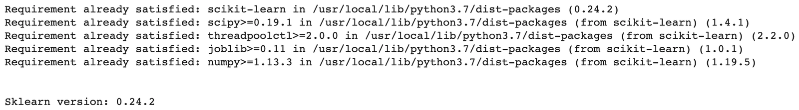
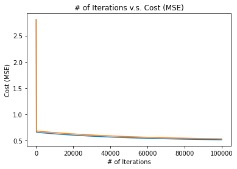
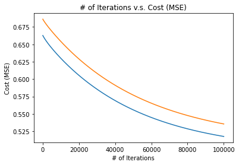

Introduction to Deep Learning · Hands On Implementations · Chapter 11
Implementing Linear Regression
In this chapter
In this part, we will implement Linear Regression, Logistic Regression, and a Neural Network in Python. You can follow along in your own Python editor or Jupyter Notebook. The online versions of this code in Jupyter notebooks can be found on GitHub at this link.
11.1Importing Libraries
Before we start, let’s import some necessary libraries we will be using.
import sklearn # Sklearn
!pip install -U scikit-learn
print("\n\nSklearn version: " + str(sklearn.__version__))
import numpy as np # NumPy
import pandas as pd # Pandas
import matplotlib.pyplot as plt # Matplotlib
from IPython.display import display # For displaying the Pandas DataFrame
from sklearn.datasets import fetch_california_housing # Import data set from sklearn
from sklearn.model_selection import train_test_split # For splitting the data set into train and test sets
11.2Import Data set from Sklearn
We will be using a house prices data set. In this data set, we are given some information about certain California districts along with the median house price in the corresponding district.
In this notebook, we will use Linear Regression to predict the median house price (label) using the given information about the California districts (features).
In the following code boxes, we import the data from Sklearn.
data = fetch_california_housing(return_X_y=True, as_frame=True) # Import data set from sklearn and store it in "data"X, y = data # "data" is a tuple: (X,y). This line stores the x-values in "X" and the y=values in "y".
y = pd.DataFrame({"median_house_value": y}) # Convert y to a Pandas DataFrame
# Store NumPy equivalents of the X and y variables
X_np = X.values
y_np = y.values11.2.1Quick-Look
In the following code box, we take a quick look at both the features and the labels. Note that while the and values are Pandas Data Frames, you do not need to know about these data types for this assignment.
print("X-Values (Features): ")
display(X.head())
print("\n\nY-Value (Label): ")
display(y.head())X-Values (Features):
| MedInc | HouseAge | AveRooms | AveBedrms | Population | AveOccup | Latitude | Longitude | |
|---|---|---|---|---|---|---|---|---|
| 0 | 8.3252 | 41.0 | 6.984127 | 1.023810 | 322.0 | 2.555556 | 37.88 | -122.23 |
| 1 | 8.3014 | 21.0 | 6.238137 | 0.971880 | 2401.0 | 2.109842 | 37.86 | -122.22 |
| 2 | 7.2574 | 52.0 | 8.288136 | 1.073446 | 496.0 | 2.802260 | 37.85 | -122.24 |
| 3 | 5.6431 | 52.0 | 5.817352 | 1.073059 | 558.0 | 2.547945 | 37.85 | -122.25 |
| 4 | 3.8462 | 52.0 | 6.281853 | 1.081081 | 565.0 | 2.181467 | 37.85 | -122.25 |
Y-Value (Label):
| median_house_value | |
|---|---|
| 0 | 4.526 |
| 1 | 3.585 |
| 2 | 3.521 |
| 3 | 3.413 |
| 4 | 3.422 |
11.3Data set Features
Here is some information about the features and labels of our data set. This information is from Sklearn, the provider of this data.
X-Values (Features)
MedInc: Median income in block
HouseAge: Median house age in block
AveRooms: Average number of rooms
AveBedrms: average number of bedrooms
Population: Block population
AveOccup: Average house occupancy
Latitude: House block latitude
Longitude: House block longitude
Y-Value (Label)
Label: Median house value for California districts
m = X.shape[0]
n = X.shape[1]
print("Number of examples: " + str(m))
print("Number of features: " + str(n))Number of examples: 20640 Number of features: 8
11.4Data set Shape
In the last code box, we found that our data set has 20,640 examples and 8 features. This kind of familiarity with the data set is always nice to know before creating the Machine Learning model.
11.5Separating Train and Test Sets
There are 20,640 examples in our data set. We will use about 90% of this data for training our Linear Regression model, and the remaining 10% of the data to evaluate our model.
In the following code box, we split the data set into train and test sets. We will also keep NumPy array versions of the and values for training our model.
X_train, X_test, y_train, y_test = train_test_split(X, y, train_size=0.9, random_state=0)
# For the NumPy versions of the variables, we transpose them so that the examples are in the columns
X_train_np = X_train.values.T
X_test_np = X_test.values.T
y_train_np = y_train.values.T
y_test_np = y_test.values.T
m_train = X_train.shape[0]
m_test = X_test.shape[0]
print("Number of examples in train set: " + str(m_train))
print("Number of examples in test set:\t " + str(m_test))Number of examples in train set: 18576 Number of examples in test set: 2064
11.6Gradient Descent
Now we will move onto the Linear Regression model. For Linear Regression, we use Gradient Descent. These are the steps of Gradient Descent (the parameter initialization is specific to Linear Regression, but most of these steps are applied to (mostly) all types of Machine Learning and Deep Learning algorithms):
Initialize Parameters
For Linear Regression, we initialize all parameters to 0.
Hypothesis Function
Use the paramters and input features to compute the hypothesis .
Cost Function Use the prediction and the real label to compute the Mean Squared Error (MSE) cost function.
Parameter Update
Compute the parameter update for all parameters and update them using the appropriate learning rate (alpha).
Repeat!
Repeat Steps 2-4 many times until the cost is sufficiently low.
In the following code boxes, we will write code for each of these steps. In the end, we will put these together to train the Linear Regression model.
11.6.1Initialize Parameters
Since there are 8 features, we will have 9 parameters (weights).
We will initialize 8 of these to 0 and store them in . Remember, should be a row vector, so its shape should be .
There is also 1 bias parameter which we will call . We will also initialize this to 0.
Therefore, there are 9 parameters total. In the following code box, we create a function that initializes the parameters.
def initialize_parameters():
W = np.zeros((1,8))
b = 0
return W, b11.6.2Hypothesis Function
Recall that the hypothesis function for Linear Regression is: where represents matrix multiplication. In Python code, this would be:
y_hat = np.dot(W, X) + bIn the next code box, we create the hypothesis function.
def hypothesis(X, b, W):
y_hat = np.dot(W, X) + b
return y_hat11.6.3Cost Function
Now, we define the cost function using and . Remember, when and are matrices, the cost function is defined as follows: where ”” and the squaring operation represent element-wise subtraction and squaring. In Python code, this would be:
J = 1/(2*m) * np.sum((y - y_hat)**2)(Sidenote: For the Python function, instead of passing in , , and , we will simply pass in (which we computed in the last step). Additionally, we will pass in and .)
In the next code box, we create the cost function.
def cost(y_hat, y, m):
J = 1/(2*m) * np.sum((y - y_hat)**2)
return J11.6.4Parameter Update
After computing the cost, we have to adjust our parameters. Recall that the parameter update for is: Similarly, this is how we update : Additionally, here are the values for and :
In Python code, these 4 equations would be:
W = W - alpha * dJdW
b = b - alpha * dJdb
dJdW = 1/m * np.dot((y_hat-y), X.T)
dJdb = 1/m * np.sum(y_hat-y)Note that in Python, we will run the last two lines of codes first (otherwise we will get an error). In the next code box, we create a function to update our parameters.
def parameter_update(X, y_hat, y, m, alpha, W, b):
dJdW = 1/m * np.dot((y_hat-y), X.T)
dJdb = 1/m * np.sum(y_hat-y)
W = W - alpha * dJdW
b = b - alpha * dJdb
return W, b11.6.5Put it all together!
We will now do Step 5 of Gradient Descent (Repeat!) by putting all of the previous functions together into a model function. This is what we will do in this function:
Initialize Parameters
Compute Hypothesis
Compute Cost Function
Update Parameters
Repeat Steps 2-4 for as many iterations as we choose to train our model.
Finally, we return the learned parameters and . While training the model, we will print the cost on the train set every few iterations and, along with this, the cost on the test set. We will keep track of these costs and return some values that are helpful in graphing our performance.
In the following code box, we create the model function.
def model(X_train, y_train, m_train, X_test, y_test, m_test, alpha=0.1, iterations=1000):
# Initialize Parameters
W, b = initialize_parameters()
# Keep track of costs for train and test sets
iteration_nums = [] # X-value for performance graph
costs_train = []
costs_test = []
# Repeat the following steps of Gradient Descent using a for-loop
for i in range(iterations):
# Compute Hypothesis
y_hat = hypothesis(X_train, b, W)
# Compute Cost Function for train set and test set and print this out
# Only do this once every 100 iterations
if i % 100 == 0:
iteration_nums.append(i) # Add iteration number to list of iteration numbers
cost_train = cost(y_hat, y_train, m_train) # Compute cost for train set
costs_train.append(cost_train) # Add cost to list of train costs
y_hat_test = hypothesis(X_test, b, W) # Compute hypothesis for test set
cost_test = cost(y_hat_test, y_test, m_test) # Compute cost for test set
costs_test.append(cost_test) # Add cost to list of test costs
print("\n\nIteration " + str(i))
print("Train set cost: " + str(cost_train))
print("Test set cost: " + str(cost_test))
# Update Parameters
W, b = parameter_update(X_train, y_hat, y_train, m_train, alpha, W, b)
# Print final costs for train and test sets
iteration_nums.append(iterations) # Add iteration number to list of iteration numbers
y_hat = hypothesis(X_train, b, W) # Compute hypothesis for train set
cost_train = cost(y_hat, y_train, m_train) # Compute cost for train set
costs_train.append(cost_train) # Add cost to list of train costs
y_hat_test = hypothesis(X_test, b, W) # Compute hypothesis for test set
cost_test = cost(y_hat_test, y_test, m_test) # Compute cost for test set
costs_test.append(cost_test) # Add cost to list of test costs
print("\n\n")
print("Final train set cost: " + str(cost_train))
print("Final test set cost: " + str(cost_test))
# Return learned parameters
return W, b, iteration_nums, costs_train, costs_test11.7Training the Model
Finally, we get to train the Linear Regression model. In the next code box, we run the model function with the appropriate arguments and store the learned parameters in the variables and . Note that we feed in the NumPy version of all variables to avoid any errors.
W, b, iteration_nums, costs_train, costs_test = model(X_train=X_train_np_norm, y_train=y_train_np, m_train=m_train, X_test=X_test_np_norm, y_test=y_test_np, m_test=m_test, alpha=0.1, iterations=100000)Here are the last few lines of the output:
Streaming output truncated to the last 5000 lines. Iteration 100 Train set cost: 0.6627961540583556 Test set cost: 0.686252753742959 Iteration 200 Train set cost: 0.662137352632664 Test set cost: 0.6856336959555863 Iteration 300 Train set cost: 0.6616676183622341 Test set cost: 0.6852013014094194 Iteration 400 Train set cost: 0.6612133279879888 Test set cost: 0.6847853347743735 Iteration 500 Train set cost: 0.6607665818480404 Test set cost: 0.6843760740100612 Iteration 600 Train set cost: 0.6603266837583697 Test set cost: 0.6839723327249306 Iteration 700 Train set cost: 0.6598932703321372 Test set cost: 0.6835736726348833 Iteration 800 Train set cost: 0.6594660120187719 Test set cost: 0.6831797870689245 Iteration 900 Train set cost: 0.6590445989977314 Test set cost: 0.6827904097646668 Iteration 1000 Train set cost: 0.6586287394848532 Test set cost: 0.6824052956052071 Iteration 1100 Train set cost: 0.6582181586410808 Test set cost: 0.6820242156481118 Iteration 1200 Train set cost: 0.6578125975679293 Test set cost: 0.6816469553213164 Iteration 1300 Train set cost: 0.6574118123637228 Test set cost: 0.6812733133633212 Iteration 1400 Train set cost: 0.6570155732360803 Test set cost: 0.6809031009679906 Iteration 1500 Train set cost: 0.6566236636672493 Test set cost: 0.6805361410120994 Iteration 1600 Train set cost: 0.6562358796291373 Test set cost: 0.6801722673365305 Iteration 1700 Train set cost: 0.6558520288450702 Test set cost: 0.6798113240726007 Iteration 1800 Train set cost: 0.6554719300954932 Test set cost: 0.6794531650096437 Iteration 1900 Train set cost: 0.6550954125649892 Test set cost: 0.679097653001105 Iteration 2000 Train set cost: 0.6547223152281537 Test set cost: 0.6787446594067768 Iteration 2100 Train set cost: 0.654352486272003 Test set cost: 0.6783940635689704 Iteration 2200 Train set cost: 0.6539857825527409 Test set cost: 0.6780457523205814 Iteration 2300 Train set cost: 0.6536220690848301 Test set cost: 0.6776996195231136 Iteration 2400 Train set cost: 0.6532612185604457 Test set cost: 0.6773555656328549 Iteration 2500 Train set cost: 0.6529031108974952 Test set cost: 0.6770134972935011 Iteration 2600 Train set cost: 0.6525476328145023 Test set cost: 0.6766733269536288 Iteration 2700 Train set cost: 0.6521946774307538 Test set cost: 0.6763349725075146 Iteration 2800 Train set cost: 0.6518441438902014 Test set cost: 0.6759983569578861 Iteration 2900 Train set cost: 0.6514959370077021 Test set cost: 0.675663408099279 Iteration 3000 Train set cost: 0.6511499669362677 Test set cost: 0.6753300582207513 Iteration 3100 Train set cost: 0.650806148854066 Test set cost: 0.6749982438267822 Iteration 3200 Train set cost: 0.6504644026700026 Test set cost: 0.674667905375254 Iteration 3300 Train set cost: 0.6501246527467708 Test set cost: 0.6743389870314817 Iteration 3400 Train set cost: 0.6497868276403296 Test set cost: 0.6740114364373154 Iteration 3500 Train set cost: 0.6494508598548332 Test set cost: 0.6736852044944044 Iteration 3600 Train set cost: 0.6491166856120885 Test set cost: 0.6733602451607592 Iteration 3700 Train set cost: 0.6487842446346757 Test set cost: 0.6730365152598088 Iteration 3800 Train set cost: 0.6484534799419187 Test set cost: 0.672713974301189 Iteration 3900 Train set cost: 0.6481243376579401 Test set cost: 0.6723925843125548 Iteration 4000 Train set cost: 0.6477967668310797 Test set cost: 0.6720723096817415 Iteration 4100 Train set cost: 0.647470719264 Test set cost: 0.6717531170086477 Iteration 4200 Train set cost: 0.6471461493538448 Test set cost: 0.671434974966249 Iteration 4300 Train set cost: 0.6468230139418483 Test set cost: 0.6711178541701844 Iteration 4400 Train set cost: 0.6465012721718351 Test set cost: 0.6708017270563963 Iteration 4500 Train set cost: 0.6461808853570823 Test set cost: 0.6704865677663292 Iteration 4600 Train set cost: 0.6458618168550427 Test set cost: 0.6701723520392315 Iteration 4700 Train set cost: 0.6455440319494656 Test set cost: 0.6698590571111229 Iteration 4800 Train set cost: 0.6452274977394713 Test set cost: 0.6695466616200207 Iteration 4900 Train set cost: 0.6449121830351688 Test set cost: 0.6692351455170469 Iteration 5000 Train set cost: 0.6445980582594257 Test set cost: 0.6689244899830515 Iteration 5100 Train set cost: 0.6442850953554252 Test set cost: 0.668614677350419 Iteration 5200 Train set cost: 0.6439732676996662 Test set cost: 0.6683056910297368 Iteration 5300 Train set cost: 0.6436625500200819 Test set cost: 0.6679975154410338 Iteration 5400 Train set cost: 0.6433529183189752 Test set cost: 0.6676901359493013 Iteration 5500 Train set cost: 0.6430443498004828 Test set cost: 0.6673835388040428 Iteration 5600 Train set cost: 0.6427368228022978 Test set cost: 0.667077711082597 Iteration 5700 Train set cost: 0.6424303167314028 Test set cost: 0.6667726406370093 Iteration 5800 Train set cost: 0.6421248120035693 Test set cost: 0.6664683160442285 Iteration 5900 Train set cost: 0.641820289986404 Test set cost: 0.666164726559429 Iteration 6000 Train set cost: 0.641516732945731 Test set cost: 0.6658618620722623 Iteration 6100 Train set cost: 0.64121412399511 Test set cost: 0.6655597130658595 Iteration 6200 Train set cost: 0.6409124470483072 Test set cost: 0.6652582705784156 Iteration 6300 Train set cost: 0.640611686774542 Test set cost: 0.664957526167195 Iteration 6400 Train set cost: 0.6403118285563448 Test set cost: 0.6646574718748101 Iteration 6500 Train set cost: 0.6400128584498742 Test set cost: 0.6643581001976319 Iteration 6600 Train set cost: 0.6397147631475433 Test set cost: 0.6640594040562008 Iteration 6700 Train set cost: 0.6394175299428222 Test set cost: 0.663761376767514 Iteration 6800 Train set cost: 0.6391211466970871 Test set cost: 0.6634640120190737 Iteration 6900 Train set cost: 0.6388256018083923 Test set cost: 0.6631673038445859 Iteration 7000 Train set cost: 0.638530884182056 Test set cost: 0.6628712466012083 Iteration 7100 Train set cost: 0.6382369832029479 Test set cost: 0.6625758349482516 Iteration 7200 Train set cost: 0.6379438887093825 Test set cost: 0.6622810638272406 Iteration 7300 Train set cost: 0.6376515909685195 Test set cost: 0.661986928443256 Iteration 7400 Train set cost: 0.6373600806531845 Test set cost: 0.6616934242474716 Iteration 7500 Train set cost: 0.6370693488200254 Test set cost: 0.6614005469208153 Iteration 7600 Train set cost: 0.6367793868889272 Test set cost: 0.6611082923586835 Iteration 7700 Train set cost: 0.6364901866236077 Test set cost: 0.6608166566566422 Iteration 7800 Train set cost: 0.6362017401133283 Test set cost: 0.6605256360970535 Iteration 7900 Train set cost: 0.6359140397556529 Test set cost: 0.6602352271365685 Iteration 8000 Train set cost: 0.6356270782401904 Test set cost: 0.6599454263944354 Iteration 8100 Train set cost: 0.635340848533269 Test set cost: 0.6596562306415664 Iteration 8200 Train set cost: 0.6350553438634814 Test set cost: 0.6593676367903206 Iteration 8300 Train set cost: 0.6347705577080537 Test set cost: 0.6590796418849542 Iteration 8400 Train set cost: 0.6344864837799877 Test set cost: 0.6587922430926987 Iteration 8500 Train set cost: 0.6342031160159324 Test set cost: 0.6585054376954242 Iteration 8600 Train set cost: 0.6339204485647412 Test set cost: 0.6582192230818545 Iteration 8700 Train set cost: 0.6336384757766754 Test set cost: 0.657933596740296 Iteration 8800 Train set cost: 0.6333571921932144 Test set cost: 0.6576485562518476 Iteration 8900 Train set cost: 0.6330765925374404 Test set cost: 0.6573640992840653 Iteration 9000 Train set cost: 0.6327966717049606 Test set cost: 0.6570802235850464 Iteration 9100 Train set cost: 0.6325174247553375 Test set cost: 0.6567969269779105 Iteration 9200 Train set cost: 0.6322388469039968 Test set cost: 0.6565142073556518 Iteration 9300 Train set cost: 0.6319609335145873 Test set cost: 0.656232062676336 Iteration 9400 Train set cost: 0.6316836800917615 Test set cost: 0.6559504909586241 Iteration 9500 Train set cost: 0.6314070822743589 Test set cost: 0.6556694902775975 Iteration 9600 Train set cost: 0.6311311358289632 Test set cost: 0.6553890587608677 Iteration 9700 Train set cost: 0.630855836643814 Test set cost: 0.6551091945849521 Iteration 9800 Train set cost: 0.6305811807230545 Test set cost: 0.6548298959718977 Iteration 9900 Train set cost: 0.6303071641812904 Test set cost: 0.654551161186137 Iteration 10000 Train set cost: 0.6300337832384478 Test set cost: 0.6542729885315607 Iteration 10100 Train set cost: 0.6297610342149087 Test set cost: 0.6539953763487943 Iteration 10200 Train set cost: 0.6294889135269108 Test set cost: 0.6537183230126632 Iteration 10300 Train set cost: 0.6292174176821943 Test set cost: 0.6534418269298357 Iteration 10400 Train set cost: 0.628946543275883 Test set cost: 0.6531658865366309 Iteration 10500 Train set cost: 0.6286762869865852 Test set cost: 0.6528905002969825 Iteration 10600 Train set cost: 0.6284066455727032 Test set cost: 0.6526156667005458 Iteration 10700 Train set cost: 0.6281376158689383 Test set cost: 0.6523413842609396 Iteration 10800 Train set cost: 0.6278691947829795 Test set cost: 0.6520676515141147 Iteration 10900 Train set cost: 0.6276013792923678 Test set cost: 0.6517944670168394 Iteration 11000 Train set cost: 0.627334166441523 Test set cost: 0.6515218293452943 Iteration 11100 Train set cost: 0.6270675533389279 Test set cost: 0.6512497370937697 Iteration 11200 Train set cost: 0.6268015371544553 Test set cost: 0.650978188873458 Iteration 11300 Train set cost: 0.6265361151168365 Test set cost: 0.6507071833113358 Iteration 11400 Train set cost: 0.6262712845112565 Test set cost: 0.6504367190491277 Iteration 11500 Train set cost: 0.626007042677074 Test set cost: 0.6501667947423477 Iteration 11600 Train set cost: 0.6257433870056571 Test set cost: 0.6498974090594128 Iteration 11700 Train set cost: 0.6254803149383278 Test set cost: 0.6496285606808235 Iteration 11800 Train set cost: 0.6252178239644087 Test set cost: 0.6493602482984059 Iteration 11900 Train set cost: 0.6249559116193706 Test set cost: 0.6490924706146128 Iteration 12000 Train set cost: 0.6246945754830682 Test set cost: 0.6488252263418782 Iteration 12100 Train set cost: 0.6244338131780645 Test set cost: 0.6485585142020218 Iteration 12200 Train set cost: 0.6241736223680387 Test set cost: 0.6482923329257007 Iteration 12300 Train set cost: 0.6239140007562689 Test set cost: 0.6480266812519042 Iteration 12400 Train set cost: 0.6236549460841904 Test set cost: 0.6477615579274885 Iteration 12500 Train set cost: 0.623396456130022 Test set cost: 0.6474969617067494 Iteration 12600 Train set cost: 0.6231385287074586 Test set cost: 0.6472328913510295 Iteration 12700 Train set cost: 0.622881161664425 Test set cost: 0.6469693456283565 Iteration 12800 Train set cost: 0.6226243528818897 Test set cost: 0.6467063233131142 Iteration 12900 Train set cost: 0.6223681002727318 Test set cost: 0.6464438231857372 Iteration 13000 Train set cost: 0.6221124017806632 Test set cost: 0.6461818440324343 Iteration 13100 Train set cost: 0.6218572553791974 Test set cost: 0.6459203846449351 Iteration 13200 Train set cost: 0.6216026590706681 Test set cost: 0.6456594438202564 Iteration 13300 Train set cost: 0.6213486108852903 Test set cost: 0.6453990203604922 Iteration 13400 Train set cost: 0.6210951088802636 Test set cost: 0.6451391130726196 Iteration 13500 Train set cost: 0.6208421511389169 Test set cost: 0.644879720768323 Iteration 13600 Train set cost: 0.6205897357698892 Test set cost: 0.6446208422638352 Iteration 13700 Train set cost: 0.6203378609063473 Test set cost: 0.6443624763797919 Iteration 13800 Train set cost: 0.6200865247052367 Test set cost: 0.6441046219411 Iteration 13900 Train set cost: 0.6198357253465647 Test set cost: 0.6438472777768189 Iteration 14000 Train set cost: 0.619585461032715 Test set cost: 0.6435904427200526 Iteration 14100 Train set cost: 0.6193357299877893 Test set cost: 0.6433341156078527 Iteration 14200 Train set cost: 0.6190865304569791 Test set cost: 0.6430782952811319 Iteration 14300 Train set cost: 0.6188378607059608 Test set cost: 0.642822980584584 Iteration 14400 Train set cost: 0.6185897190203168 Test set cost: 0.6425681703666146 Iteration 14500 Train set cost: 0.618342103704981 Test set cost: 0.6423138634792778 Iteration 14600 Train set cost: 0.6180950130837048 Test set cost: 0.6420600587782196 Iteration 14700 Train set cost: 0.6178484454985449 Test set cost: 0.6418067551226285 Iteration 14800 Train set cost: 0.6176023993093727 Test set cost: 0.6415539513751908 Iteration 14900 Train set cost: 0.6173568728934009 Test set cost: 0.6413016464020508 Iteration 15000 Train set cost: 0.6171118646447292 Test set cost: 0.6410498390727769 Iteration 15100 Train set cost: 0.6168673729739075 Test set cost: 0.6407985282603302 Iteration 15200 Train set cost: 0.616623396307515 Test set cost: 0.6405477128410388 Iteration 15300 Train set cost: 0.6163799330877563 Test set cost: 0.6402973916945738 Iteration 15400 Train set cost: 0.6161369817720709 Test set cost: 0.6400475637039286 Iteration 15500 Train set cost: 0.6158945408327581 Test set cost: 0.6397982277554026 Iteration 15600 Train set cost: 0.6156526087566144 Test set cost: 0.6395493827385852 Iteration 15700 Train set cost: 0.6154111840445861 Test set cost: 0.6393010275463428 Iteration 15800 Train set cost: 0.6151702652114308 Test set cost: 0.6390531610748086 Iteration 15900 Train set cost: 0.6149298507853941 Test set cost: 0.638805782223373 Iteration 16000 Train set cost: 0.6146899393078956 Test set cost: 0.6385588898946754 Iteration 16100 Train set cost: 0.6144505293332267 Test set cost: 0.638312482994598 Iteration 16200 Train set cost: 0.6142116194282575 Test set cost: 0.6380665604322606 Iteration 16300 Train set cost: 0.6139732081721543 Test set cost: 0.6378211211200161 Iteration 16400 Train set cost: 0.613735294156107 Test set cost: 0.6375761639734463 Iteration 16500 Train set cost: 0.613497875983064 Test set cost: 0.6373316879113602 Iteration 16600 Train set cost: 0.6132609522674783 Test set cost: 0.6370876918557898 Iteration 16700 Train set cost: 0.6130245216350576 Test set cost: 0.6368441747319906 Iteration 16800 Train set cost: 0.612788582722527 Test set cost: 0.6366011354684373 Iteration 16900 Train set cost: 0.6125531341773961 Test set cost: 0.6363585729968243 Iteration 17000 Train set cost: 0.6123181746577343 Test set cost: 0.6361164862520639 Iteration 17100 Train set cost: 0.6120837028319536 Test set cost: 0.6358748741722848 Iteration 17200 Train set cost: 0.6118497173785962 Test set cost: 0.635633735698832 Iteration 17300 Train set cost: 0.6116162169861319 Test set cost: 0.6353930697762641 Iteration 17400 Train set cost: 0.6113832003527573 Test set cost: 0.6351528753523542 Iteration 17500 Train set cost: 0.6111506661862046 Test set cost: 0.6349131513780865 Iteration 17600 Train set cost: 0.6109186132035539 Test set cost: 0.6346738968076555 Iteration 17700 Train set cost: 0.6106870401310511 Test set cost: 0.634435110598465 Iteration 17800 Train set cost: 0.6104559457039332 Test set cost: 0.634196791711125 Iteration 17900 Train set cost: 0.6102253286662549 Test set cost: 0.6339589391094497 Iteration 18000 Train set cost: 0.6099951877707235 Test set cost: 0.6337215517604554 Iteration 18100 Train set cost: 0.6097655217785362 Test set cost: 0.6334846286343573 Iteration 18200 Train set cost: 0.6095363294592232 Test set cost: 0.6332481687045659 Iteration 18300 Train set cost: 0.6093076095904945 Test set cost: 0.6330121709476837 Iteration 18400 Train set cost: 0.6090793609580906 Test set cost: 0.6327766343435016 Iteration 18500 Train set cost: 0.6088515823556384 Test set cost: 0.6325415578749941 Iteration 18600 Train set cost: 0.6086242725845092 Test set cost: 0.6323069405283148 Iteration 18700 Train set cost: 0.6083974304536822 Test set cost: 0.632072781292791 Iteration 18800 Train set cost: 0.6081710547796103 Test set cost: 0.6318390791609187 Iteration 18900 Train set cost: 0.6079451443860899 Test set cost: 0.6316058331283569 Iteration 19000 Train set cost: 0.6077196981041347 Test set cost: 0.6313730421939208 Iteration 19100 Train set cost: 0.6074947147718511 Test set cost: 0.6311407053595752 Iteration 19200 Train set cost: 0.6072701932343184 Test set cost: 0.6309088216304282 Iteration 19300 Train set cost: 0.607046132343471 Test set cost: 0.630677390014723 Iteration 19400 Train set cost: 0.6068225309579842 Test set cost: 0.6304464095238308 Iteration 19500 Train set cost: 0.6065993879431626 Test set cost: 0.630215879172243 Iteration 19600 Train set cost: 0.6063767021708306 Test set cost: 0.6299857979775615 Iteration 19700 Train set cost: 0.6061544725192267 Test set cost: 0.6297561649604915 Iteration 19800 Train set cost: 0.6059326978728997 Test set cost: 0.6295269791448314 Iteration 19900 Train set cost: 0.6057113771226073 Test set cost: 0.6292982395574629 Iteration 20000 Train set cost: 0.6054905091652178 Test set cost: 0.6290699452283435 Iteration 20100 Train set cost: 0.6052700929036133 Test set cost: 0.6288420951904936 Iteration 20200 Train set cost: 0.6050501272465957 Test set cost: 0.6286146884799881 Iteration 20300 Train set cost: 0.6048306111087949 Test set cost: 0.6283877241359452 Iteration 20400 Train set cost: 0.6046115434105784 Test set cost: 0.6281612012005151 Iteration 20500 Train set cost: 0.6043929230779647 Test set cost: 0.6279351187188696 Iteration 20600 Train set cost: 0.6041747490425365 Test set cost: 0.6277094757391901 Iteration 20700 Train set cost: 0.6039570202413579 Test set cost: 0.6274842713126564 Iteration 20800 Train set cost: 0.6037397356168916 Test set cost: 0.6272595044934338 Iteration 20900 Train set cost: 0.6035228941169203 Test set cost: 0.6270351743386626 Iteration 21000 Train set cost: 0.6033064946944672 Test set cost: 0.6268112799084442 Iteration 21100 Train set cost: 0.6030905363077198 Test set cost: 0.6265878202658299 Iteration 21200 Train set cost: 0.6028750179199561 Test set cost: 0.6263647944768067 Iteration 21300 Train set cost: 0.6026599384994705 Test set cost: 0.6261422016102863 Iteration 21400 Train set cost: 0.6024452970195028 Test set cost: 0.6259200407380903 Iteration 21500 Train set cost: 0.6022310924581683 Test set cost: 0.625698310934938 Iteration 21600 Train set cost: 0.6020173237983892 Test set cost: 0.6254770112784326 Iteration 21700 Train set cost: 0.6018039900278281 Test set cost: 0.6252561408490478 Iteration 21800 Train set cost: 0.6015910901388217 Test set cost: 0.6250356987301144 Iteration 21900 Train set cost: 0.6013786231283182 Test set cost: 0.6248156840078063 Iteration 22000 Train set cost: 0.6011665879978133 Test set cost: 0.624596095771127 Iteration 22100 Train set cost: 0.6009549837532892 Test set cost: 0.6243769331118946 Iteration 22200 Train set cost: 0.6007438094051546 Test set cost: 0.6241581951247291 Iteration 22300 Train set cost: 0.6005330639681865 Test set cost: 0.6239398809070382 Iteration 22400 Train set cost: 0.6003227464614717 Test set cost: 0.6237219895590017 Iteration 22500 Train set cost: 0.6001128559083508 Test set cost: 0.6235045201835588 Iteration 22600 Train set cost: 0.5999033913363636 Test set cost: 0.6232874718863929 Iteration 22700 Train set cost: 0.5996943517771938 Test set cost: 0.6230708437759171 Iteration 22800 Train set cost: 0.5994857362666175 Test set cost: 0.6228546349632613 Iteration 22900 Train set cost: 0.5992775438444505 Test set cost: 0.6226388445622553 Iteration 23000 Train set cost: 0.5990697735544976 Test set cost: 0.6224234716894165 Iteration 23100 Train set cost: 0.5988624244445032 Test set cost: 0.6222085154639343 Iteration 23200 Train set cost: 0.5986554955661023 Test set cost: 0.6219939750076557 Iteration 23300 Train set cost: 0.5984489859747726 Test set cost: 0.6217798494450714 Iteration 23400 Train set cost: 0.5982428947297884 Test set cost: 0.6215661379033004 Iteration 23500 Train set cost: 0.5980372208941741 Test set cost: 0.6213528395120758 Iteration 23600 Train set cost: 0.5978319635346596 Test set cost: 0.6211399534037308 Iteration 23700 Train set cost: 0.5976271217216358 Test set cost: 0.6209274787131838 Iteration 23800 Train set cost: 0.5974226945291123 Test set cost: 0.6207154145779232 Iteration 23900 Train set cost: 0.5972186810346747 Test set cost: 0.6205037601379948 Iteration 24000 Train set cost: 0.5970150803194422 Test set cost: 0.6202925145359852 Iteration 24100 Train set cost: 0.596811891468029 Test set cost: 0.6200816769170094 Iteration 24200 Train set cost: 0.5966091135685024 Test set cost: 0.6198712464286947 Iteration 24300 Train set cost: 0.5964067457123451 Test set cost: 0.6196612222211682 Iteration 24400 Train set cost: 0.5962047869944161 Test set cost: 0.6194516034470402 Iteration 24500 Train set cost: 0.5960032365129136 Test set cost: 0.6192423892613927 Iteration 24600 Train set cost: 0.5958020933693379 Test set cost: 0.6190335788217634 Iteration 24700 Train set cost: 0.5956013566684552 Test set cost: 0.6188251712881319 Iteration 24800 Train set cost: 0.5954010255182624 Test set cost: 0.6186171658229062 Iteration 24900 Train set cost: 0.5952010990299524 Test set cost: 0.6184095615909084 Iteration 25000 Train set cost: 0.59500157631788 Test set cost: 0.6182023577593606 Iteration 25100 Train set cost: 0.5948024564995277 Test set cost: 0.6179955534978716 Iteration 25200 Train set cost: 0.5946037386954738 Test set cost: 0.6177891479784224 Iteration 25300 Train set cost: 0.59440542202936 Test set cost: 0.6175831403753538 Iteration 25400 Train set cost: 0.5942075056278597 Test set cost: 0.6173775298653507 Iteration 25500 Train set cost: 0.5940099886206467 Test set cost: 0.6171723156274306 Iteration 25600 Train set cost: 0.5938128701403653 Test set cost: 0.6169674968429291 Iteration 25700 Train set cost: 0.5936161493226004 Test set cost: 0.616763072695487 Iteration 25800 Train set cost: 0.5934198253058479 Test set cost: 0.6165590423710369 Iteration 25900 Train set cost: 0.5932238972314855 Test set cost: 0.6163554050577893 Iteration 26000 Train set cost: 0.593028364243746 Test set cost: 0.6161521599462205 Iteration 26100 Train set cost: 0.5928332254896883 Test set cost: 0.6159493062290596 Iteration 26200 Train set cost: 0.5926384801191705 Test set cost: 0.6157468431012743 Iteration 26300 Train set cost: 0.5924441272848233 Test set cost: 0.6155447697600597 Iteration 26400 Train set cost: 0.592250166142024 Test set cost: 0.6153430854048244 Iteration 26500 Train set cost: 0.59205659584887 Test set cost: 0.6151417892371783 Iteration 26600 Train set cost: 0.5918634155661545 Test set cost: 0.6149408804609202 Iteration 26700 Train set cost: 0.5916706244573413 Test set cost: 0.614740358282025 Iteration 26800 Train set cost: 0.5914782216885401 Test set cost: 0.6145402219086316 Iteration 26900 Train set cost: 0.5912862064284833 Test set cost: 0.6143404705510302 Iteration 27000 Train set cost: 0.5910945778485015 Test set cost: 0.6141411034216512 Iteration 27100 Train set cost: 0.5909033351225016 Test set cost: 0.6139421197350516 Iteration 27200 Train set cost: 0.590712477426943 Test set cost: 0.6137435187079048 Iteration 27300 Train set cost: 0.5905220039408163 Test set cost: 0.6135452995589867 Iteration 27400 Train set cost: 0.5903319138456206 Test set cost: 0.6133474615091663 Iteration 27500 Train set cost: 0.5901422063253426 Test set cost: 0.6131500037813915 Iteration 27600 Train set cost: 0.5899528805664354 Test set cost: 0.61295292560068 Iteration 27700 Train set cost: 0.5897639357577971 Test set cost: 0.612756226194106 Iteration 27800 Train set cost: 0.5895753710907515 Test set cost: 0.6125599047907896 Iteration 27900 Train set cost: 0.5893871857590275 Test set cost: 0.6123639606218858 Iteration 28000 Train set cost: 0.5891993789587391 Test set cost: 0.6121683929205726 Iteration 28100 Train set cost: 0.5890119498883662 Test set cost: 0.6119732009220405 Iteration 28200 Train set cost: 0.5888248977487367 Test set cost: 0.6117783838634816 Iteration 28300 Train set cost: 0.5886382217430057 Test set cost: 0.6115839409840782 Iteration 28400 Train set cost: 0.5884519210766389 Test set cost: 0.6113898715249928 Iteration 28500 Train set cost: 0.5882659949573942 Test set cost: 0.6111961747293565 Iteration 28600 Train set cost: 0.5880804425953033 Test set cost: 0.6110028498422595 Iteration 28700 Train set cost: 0.5878952632026546 Test set cost: 0.61080989611074 Iteration 28800 Train set cost: 0.5877104559939762 Test set cost: 0.6106173127837737 Iteration 28900 Train set cost: 0.587526020186019 Test set cost: 0.6104250991122641 Iteration 29000 Train set cost: 0.5873419549977397 Test set cost: 0.6102332543490318 Iteration 29100 Train set cost: 0.5871582596502851 Test set cost: 0.6100417777488049 Iteration 29200 Train set cost: 0.5869749333669755 Test set cost: 0.6098506685682088 Iteration 29300 Train set cost: 0.5867919753732893 Test set cost: 0.6096599260657563 Iteration 29400 Train set cost: 0.5866093848968473 Test set cost: 0.6094695495018375 Iteration 29500 Train set cost: 0.5864271611673976 Test set cost: 0.6092795381387114 Iteration 29600 Train set cost: 0.5862453034167997 Test set cost: 0.6090898912404943 Iteration 29700 Train set cost: 0.5860638108790113 Test set cost: 0.608900608073152 Iteration 29800 Train set cost: 0.5858826827900726 Test set cost: 0.6087116879044902 Iteration 29900 Train set cost: 0.5857019183880925 Test set cost: 0.6085231300041437 Iteration 30000 Train set cost: 0.5855215169132336 Test set cost: 0.6083349336435694 Iteration 30100 Train set cost: 0.5853414776077 Test set cost: 0.6081470980960353 Iteration 30200 Train set cost: 0.5851617997157219 Test set cost: 0.6079596226366129 Iteration 30300 Train set cost: 0.5849824824835438 Test set cost: 0.607772506542167 Iteration 30400 Train set cost: 0.5848035251594099 Test set cost: 0.6075857490913473 Iteration 30500 Train set cost: 0.5846249269935518 Test set cost: 0.6073993495645804 Iteration 30600 Train set cost: 0.5844466872381758 Test set cost: 0.6072133072440605 Iteration 30700 Train set cost: 0.5842688051474498 Test set cost: 0.6070276214137401 Iteration 30800 Train set cost: 0.5840912799774916 Test set cost: 0.6068422913593224 Iteration 30900 Train set cost: 0.5839141109863558 Test set cost: 0.6066573163682533 Iteration 31000 Train set cost: 0.5837372974340228 Test set cost: 0.6064726957297117 Iteration 31100 Train set cost: 0.5835608385823858 Test set cost: 0.6062884287346023 Iteration 31200 Train set cost: 0.5833847336952401 Test set cost: 0.6061045146755469 Iteration 31300 Train set cost: 0.5832089820382713 Test set cost: 0.605920952846877 Iteration 31400 Train set cost: 0.5830335828790438 Test set cost: 0.6057377425446245 Iteration 31500 Train set cost: 0.5828585354869898 Test set cost: 0.6055548830665153 Iteration 31600 Train set cost: 0.5826838391333983 Test set cost: 0.6053723737119606 Iteration 31700 Train set cost: 0.5825094930914045 Test set cost: 0.6051902137820492 Iteration 31800 Train set cost: 0.5823354966359787 Test set cost: 0.6050084025795394 Iteration 31900 Train set cost: 0.5821618490439161 Test set cost: 0.6048269394088525 Iteration 32000 Train set cost: 0.5819885495938263 Test set cost: 0.6046458235760642 Iteration 32100 Train set cost: 0.5818155975661236 Test set cost: 0.6044650543888981 Iteration 32200 Train set cost: 0.581642992243016 Test set cost: 0.604284631156717 Iteration 32300 Train set cost: 0.5814707329084959 Test set cost: 0.6041045531905171 Iteration 32400 Train set cost: 0.581298818848331 Test set cost: 0.6039248198029193 Iteration 32500 Train set cost: 0.5811272493500529 Test set cost: 0.6037454303081634 Iteration 32600 Train set cost: 0.5809560237029495 Test set cost: 0.6035663840220996 Iteration 32700 Train set cost: 0.5807851411980542 Test set cost: 0.603387680262183 Iteration 32800 Train set cost: 0.5806146011281378 Test set cost: 0.6032093183474654 Iteration 32900 Train set cost: 0.5804444027876985 Test set cost: 0.6030312975985888 Iteration 33000 Train set cost: 0.5802745454729534 Test set cost: 0.6028536173377786 Iteration 33100 Train set cost: 0.5801050284818295 Test set cost: 0.6026762768888372 Iteration 33200 Train set cost: 0.5799358511139556 Test set cost: 0.6024992755771368 Iteration 33300 Train set cost: 0.5797670126706524 Test set cost: 0.6023226127296131 Iteration 33400 Train set cost: 0.579598512454925 Test set cost: 0.602146287674758 Iteration 33500 Train set cost: 0.5794303497714546 Test set cost: 0.6019702997426146 Iteration 33600 Train set cost: 0.5792625239265893 Test set cost: 0.601794648264769 Iteration 33700 Train set cost: 0.5790950342283371 Test set cost: 0.6016193325743457 Iteration 33800 Train set cost: 0.578927879986357 Test set cost: 0.6014443520059999 Iteration 33900 Train set cost: 0.5787610605119515 Test set cost: 0.6012697058959112 Iteration 34000 Train set cost: 0.5785945751180588 Test set cost: 0.601095393581779 Iteration 34100 Train set cost: 0.5784284231192446 Test set cost: 0.600921414402815 Iteration 34200 Train set cost: 0.5782626038316948 Test set cost: 0.6007477676997368 Iteration 34300 Train set cost: 0.5780971165732083 Test set cost: 0.6005744528147634 Iteration 34400 Train set cost: 0.5779319606631885 Test set cost: 0.600401469091608 Iteration 34500 Train set cost: 0.5777671354226375 Test set cost: 0.6002288158754724 Iteration 34600 Train set cost: 0.5776026401741475 Test set cost: 0.6000564925130414 Iteration 34700 Train set cost: 0.5774384742418941 Test set cost: 0.5998844983524769 Iteration 34800 Train set cost: 0.5772746369516297 Test set cost: 0.5997128327434122 Iteration 34900 Train set cost: 0.5771111276306755 Test set cost: 0.5995414950369459 Iteration 35000 Train set cost: 0.5769479456079155 Test set cost: 0.5993704845856369 Iteration 35100 Train set cost: 0.5767850902137898 Test set cost: 0.5991998007434984 Iteration 35200 Train set cost: 0.5766225607802862 Test set cost: 0.5990294428659927 Iteration 35300 Train set cost: 0.576460356640936 Test set cost: 0.5988594103100254 Iteration 35400 Train set cost: 0.576298477130806 Test set cost: 0.5986897024339402 Iteration 35500 Train set cost: 0.5761369215864917 Test set cost: 0.5985203185975132 Iteration 35600 Train set cost: 0.5759756893461118 Test set cost: 0.5983512581619481 Iteration 35700 Train set cost: 0.5758147797493016 Test set cost: 0.5981825204898705 Iteration 35800 Train set cost: 0.5756541921372061 Test set cost: 0.5980141049453233 Iteration 35900 Train set cost: 0.5754939258524748 Test set cost: 0.5978460108937601 Iteration 36000 Train set cost: 0.5753339802392552 Test set cost: 0.5976782377020418 Iteration 36100 Train set cost: 0.5751743546431858 Test set cost: 0.5975107847384301 Iteration 36200 Train set cost: 0.5750150484113918 Test set cost: 0.5973436513725837 Iteration 36300 Train set cost: 0.574856060892478 Test set cost: 0.5971768369755519 Iteration 36400 Train set cost: 0.5746973914365233 Test set cost: 0.5970103409197713 Iteration 36500 Train set cost: 0.5745390393950751 Test set cost: 0.5968441625790594 Iteration 36600 Train set cost: 0.574381004121143 Test set cost: 0.5966783013286101 Iteration 36700 Train set cost: 0.5742232849691936 Test set cost: 0.5965127565449898 Iteration 36800 Train set cost: 0.5740658812951455 Test set cost: 0.5963475276061312 Iteration 36900 Train set cost: 0.5739087924563618 Test set cost: 0.5961826138913296 Iteration 37000 Train set cost: 0.5737520178116471 Test set cost: 0.596018014781238 Iteration 37100 Train set cost: 0.5735955567212404 Test set cost: 0.5958537296578619 Iteration 37200 Train set cost: 0.5734394085468102 Test set cost: 0.595689757904555 Iteration 37300 Train set cost: 0.5732835726514491 Test set cost: 0.5955260989060152 Iteration 37400 Train set cost: 0.5731280483996691 Test set cost: 0.5953627520482792 Iteration 37500 Train set cost: 0.5729728351573958 Test set cost: 0.5951997167187179 Iteration 37600 Train set cost: 0.5728179322919632 Test set cost: 0.5950369923060328 Iteration 37700 Train set cost: 0.5726633391721091 Test set cost: 0.5948745782002512 Iteration 37800 Train set cost: 0.5725090551679696 Test set cost: 0.5947124737927214 Iteration 37900 Train set cost: 0.5723550796510745 Test set cost: 0.5945506784761084 Iteration 38000 Train set cost: 0.572201411994342 Test set cost: 0.5943891916443901 Iteration 38100 Train set cost: 0.5720480515720746 Test set cost: 0.5942280126928529 Iteration 38200 Train set cost: 0.5718949977599526 Test set cost: 0.5940671410180866 Iteration 38300 Train set cost: 0.5717422499350309 Test set cost: 0.5939065760179809 Iteration 38400 Train set cost: 0.5715898074757341 Test set cost: 0.5937463170917219 Iteration 38500 Train set cost: 0.5714376697618506 Test set cost: 0.5935863636397861 Iteration 38600 Train set cost: 0.5712858361745295 Test set cost: 0.593426715063938 Iteration 38700 Train set cost: 0.5711343060962746 Test set cost: 0.5932673707672248 Iteration 38800 Train set cost: 0.570983078910941 Test set cost: 0.5931083301539732 Iteration 38900 Train set cost: 0.5708321540037293 Test set cost: 0.5929495926297849 Iteration 39000 Train set cost: 0.5706815307611829 Test set cost: 0.5927911576015323 Iteration 39100 Train set cost: 0.5705312085711813 Test set cost: 0.5926330244773559 Iteration 39200 Train set cost: 0.5703811868229378 Test set cost: 0.5924751926666585 Iteration 39300 Train set cost: 0.5702314649069937 Test set cost: 0.5923176615801019 Iteration 39400 Train set cost: 0.5700820422152147 Test set cost: 0.5921604306296046 Iteration 39500 Train set cost: 0.5699329181407868 Test set cost: 0.5920034992283353 Iteration 39600 Train set cost: 0.5697840920782107 Test set cost: 0.5918468667907111 Iteration 39700 Train set cost: 0.5696355634232996 Test set cost: 0.5916905327323929 Iteration 39800 Train set cost: 0.5694873315731728 Test set cost: 0.5915344964702814 Iteration 39900 Train set cost: 0.5693393959262539 Test set cost: 0.591378757422514 Iteration 40000 Train set cost: 0.5691917558822648 Test set cost: 0.5912233150084608 Iteration 40100 Train set cost: 0.5690444108422222 Test set cost: 0.5910681686487202 Iteration 40200 Train set cost: 0.5688973602084347 Test set cost: 0.5909133177651168 Iteration 40300 Train set cost: 0.5687506033844966 Test set cost: 0.5907587617806964 Iteration 40400 Train set cost: 0.5686041397752859 Test set cost: 0.5906045001197228 Iteration 40500 Train set cost: 0.568457968786959 Test set cost: 0.5904505322076744 Iteration 40600 Train set cost: 0.5683120898269479 Test set cost: 0.59029685747124 Iteration 40700 Train set cost: 0.5681665023039556 Test set cost: 0.5901434753383168 Iteration 40800 Train set cost: 0.5680212056279524 Test set cost: 0.5899903852380048 Iteration 40900 Train set cost: 0.5678761992101724 Test set cost: 0.5898375866006048 Iteration 41000 Train set cost: 0.5677314824631089 Test set cost: 0.5896850788576143 Iteration 41100 Train set cost: 0.5675870548005119 Test set cost: 0.5895328614417245 Iteration 41200 Train set cost: 0.5674429156373829 Test set cost: 0.589380933786816 Iteration 41300 Train set cost: 0.567299064389973 Test set cost: 0.5892292953279566 Iteration 41400 Train set cost: 0.5671555004757771 Test set cost: 0.589077945501397 Iteration 41500 Train set cost: 0.5670122233135322 Test set cost: 0.5889268837445683 Iteration 41600 Train set cost: 0.5668692323232125 Test set cost: 0.5887761094960771 Iteration 41700 Train set cost: 0.5667265269260263 Test set cost: 0.5886256221957038 Iteration 41800 Train set cost: 0.5665841065444127 Test set cost: 0.5884754212843991 Iteration 41900 Train set cost: 0.5664419706020373 Test set cost: 0.5883255062042796 Iteration 42000 Train set cost: 0.5663001185237895 Test set cost: 0.588175876398626 Iteration 42100 Train set cost: 0.5661585497357785 Test set cost: 0.5880265313118785 Iteration 42200 Train set cost: 0.56601726366533 Test set cost: 0.5878774703896347 Iteration 42300 Train set cost: 0.5658762597409829 Test set cost: 0.5877286930786458 Iteration 42400 Train set cost: 0.5657355373924857 Test set cost: 0.5875801988268139 Iteration 42500 Train set cost: 0.5655950960507933 Test set cost: 0.5874319870831879 Iteration 42600 Train set cost: 0.5654549351480628 Test set cost: 0.5872840572979617 Iteration 42700 Train set cost: 0.5653150541176519 Test set cost: 0.58713640892247 Iteration 42800 Train set cost: 0.5651754523941137 Test set cost: 0.5869890414091858 Iteration 42900 Train set cost: 0.5650361294131946 Test set cost: 0.586841954211717 Iteration 43000 Train set cost: 0.5648970846118306 Test set cost: 0.5866951467848034 Iteration 43100 Train set cost: 0.5647583174281443 Test set cost: 0.5865486185843142 Iteration 43200 Train set cost: 0.564619827301441 Test set cost: 0.5864023690672439 Iteration 43300 Train set cost: 0.5644816136722062 Test set cost: 0.58625639769171 Iteration 43400 Train set cost: 0.5643436759821023 Test set cost: 0.5861107039169505 Iteration 43500 Train set cost: 0.5642060136739652 Test set cost: 0.5859652872033199 Iteration 43600 Train set cost: 0.5640686261918013 Test set cost: 0.5858201470122865 Iteration 43700 Train set cost: 0.5639315129807839 Test set cost: 0.5856752828064299 Iteration 43800 Train set cost: 0.5637946734872511 Test set cost: 0.5855306940494381 Iteration 43900 Train set cost: 0.5636581071587017 Test set cost: 0.585386380206104 Iteration 44000 Train set cost: 0.5635218134437926 Test set cost: 0.5852423407423226 Iteration 44100 Train set cost: 0.5633857917923356 Test set cost: 0.5850985751250892 Iteration 44200 Train set cost: 0.5632500416552948 Test set cost: 0.5849550828224948 Iteration 44300 Train set cost: 0.5631145624847825 Test set cost: 0.5848118633037246 Iteration 44400 Train set cost: 0.5629793537340579 Test set cost: 0.5846689160390549 Iteration 44500 Train set cost: 0.5628444148575223 Test set cost: 0.5845262404998498 Iteration 44600 Train set cost: 0.5627097453107174 Test set cost: 0.5843838361585592 Iteration 44700 Train set cost: 0.5625753445503213 Test set cost: 0.584241702488715 Iteration 44800 Train set cost: 0.562441212034147 Test set cost: 0.584099838964929 Iteration 44900 Train set cost: 0.5623073472211381 Test set cost: 0.5839582450628905 Iteration 45000 Train set cost: 0.5621737495713667 Test set cost: 0.5838169202593628 Iteration 45100 Train set cost: 0.5620404185460303 Test set cost: 0.5836758640321806 Iteration 45200 Train set cost: 0.5619073536074485 Test set cost: 0.5835350758602479 Iteration 45300 Train set cost: 0.5617745542190612 Test set cost: 0.5833945552235343 Iteration 45400 Train set cost: 0.5616420198454244 Test set cost: 0.5832543016030735 Iteration 45500 Train set cost: 0.5615097499522087 Test set cost: 0.5831143144809595 Iteration 45600 Train set cost: 0.5613777440061959 Test set cost: 0.5829745933403448 Iteration 45700 Train set cost: 0.5612460014752757 Test set cost: 0.5828351376654373 Iteration 45800 Train set cost: 0.5611145218284435 Test set cost: 0.5826959469414978 Iteration 45900 Train set cost: 0.5609833045357983 Test set cost: 0.5825570206548376 Iteration 46000 Train set cost: 0.560852349068538 Test set cost: 0.5824183582928151 Iteration 46100 Train set cost: 0.560721654898959 Test set cost: 0.5822799593438344 Iteration 46200 Train set cost: 0.5605912215004518 Test set cost: 0.5821418232973417 Iteration 46300 Train set cost: 0.5604610483474992 Test set cost: 0.5820039496438236 Iteration 46400 Train set cost: 0.5603311349156728 Test set cost: 0.5818663378748032 Iteration 46500 Train set cost: 0.5602014806816308 Test set cost: 0.5817289874828395 Iteration 46600 Train set cost: 0.560072085123116 Test set cost: 0.581591897961523 Iteration 46700 Train set cost: 0.5599429477189519 Test set cost: 0.5814550688054744 Iteration 46800 Train set cost: 0.5598140679490408 Test set cost: 0.5813184995103418 Iteration 46900 Train set cost: 0.5596854452943606 Test set cost: 0.5811821895727972 Iteration 47000 Train set cost: 0.5595570792369632 Test set cost: 0.581046138490536 Iteration 47100 Train set cost: 0.5594289692599711 Test set cost: 0.5809103457622729 Iteration 47200 Train set cost: 0.5593011148475749 Test set cost: 0.5807748108877399 Iteration 47300 Train set cost: 0.5591735154850309 Test set cost: 0.5806395333676838 Iteration 47400 Train set cost: 0.5590461706586582 Test set cost: 0.5805045127038648 Iteration 47500 Train set cost: 0.5589190798558369 Test set cost: 0.5803697483990518 Iteration 47600 Train set cost: 0.5587922425650047 Test set cost: 0.5802352399570222 Iteration 47700 Train set cost: 0.5586656582756548 Test set cost: 0.5801009868825583 Iteration 47800 Train set cost: 0.5585393264783336 Test set cost: 0.5799669886814453 Iteration 47900 Train set cost: 0.5584132466646375 Test set cost: 0.5798332448604687 Iteration 48000 Train set cost: 0.5582874183272112 Test set cost: 0.5796997549274122 Iteration 48100 Train set cost: 0.5581618409597445 Test set cost: 0.5795665183910553 Iteration 48200 Train set cost: 0.5580365140569703 Test set cost: 0.5794335347611705 Iteration 48300 Train set cost: 0.5579114371146622 Test set cost: 0.5793008035485215 Iteration 48400 Train set cost: 0.5577866096296314 Test set cost: 0.5791683242648606 Iteration 48500 Train set cost: 0.5576620310997252 Test set cost: 0.5790360964229261 Iteration 48600 Train set cost: 0.5575377010238237 Test set cost: 0.5789041195364407 Iteration 48700 Train set cost: 0.5574136189018382 Test set cost: 0.5787723931201089 Iteration 48800 Train set cost: 0.5572897842347078 Test set cost: 0.5786409166896139 Iteration 48900 Train set cost: 0.5571661965243978 Test set cost: 0.5785096897616169 Iteration 49000 Train set cost: 0.5570428552738975 Test set cost: 0.5783787118537531 Iteration 49100 Train set cost: 0.5569197599872163 Test set cost: 0.5782479824846306 Iteration 49200 Train set cost: 0.5567969101693837 Test set cost: 0.5781175011738278 Iteration 49300 Train set cost: 0.5566743053264448 Test set cost: 0.5779872674418913 Iteration 49400 Train set cost: 0.5565519449654592 Test set cost: 0.5778572808103329 Iteration 49500 Train set cost: 0.5564298285944979 Test set cost: 0.5777275408016289 Iteration 49600 Train set cost: 0.5563079557226418 Test set cost: 0.5775980469392159 Iteration 49700 Train set cost: 0.5561863258599782 Test set cost: 0.5774687987474901 Iteration 49800 Train set cost: 0.5560649385176 Test set cost: 0.5773397957518045 Iteration 49900 Train set cost: 0.5559437932076022 Test set cost: 0.577211037478467 Iteration 50000 Train set cost: 0.5558228894430799 Test set cost: 0.5770825234547378 Iteration 50100 Train set cost: 0.5557022267381263 Test set cost: 0.5769542532088273 Iteration 50200 Train set cost: 0.55558180460783 Test set cost: 0.5768262262698942 Iteration 50300 Train set cost: 0.5554616225682735 Test set cost: 0.5766984421680432 Iteration 50400 Train set cost: 0.5553416801365298 Test set cost: 0.5765709004343229 Iteration 50500 Train set cost: 0.5552219768306612 Test set cost: 0.5764436006007233 Iteration 50600 Train set cost: 0.5551025121697162 Test set cost: 0.5763165422001741 Iteration 50700 Train set cost: 0.5549832856737276 Test set cost: 0.5761897247665422 Iteration 50800 Train set cost: 0.5548642968637111 Test set cost: 0.57606314783463 Iteration 50900 Train set cost: 0.5547455452616619 Test set cost: 0.5759368109401728 Iteration 51000 Train set cost: 0.5546270303905525 Test set cost: 0.5758107136198373 Iteration 51100 Train set cost: 0.5545087517743315 Test set cost: 0.5756848554112184 Iteration 51200 Train set cost: 0.5543907089379206 Test set cost: 0.5755592358528387 Iteration 51300 Train set cost: 0.5542729014072127 Test set cost: 0.5754338544841449 Iteration 51400 Train set cost: 0.5541553287090697 Test set cost: 0.5753087108455065 Iteration 51500 Train set cost: 0.55403799037132 Test set cost: 0.5751838044782135 Iteration 51600 Train set cost: 0.5539208859227572 Test set cost: 0.575059134924475 Iteration 51700 Train set cost: 0.5538040148931368 Test set cost: 0.5749347017274157 Iteration 51800 Train set cost: 0.5536873768131749 Test set cost: 0.5748105044310751 Iteration 51900 Train set cost: 0.5535709712145458 Test set cost: 0.5746865425804049 Iteration 52000 Train set cost: 0.5534547976298799 Test set cost: 0.5745628157212674 Iteration 52100 Train set cost: 0.5533388555927613 Test set cost: 0.574439323400433 Iteration 52200 Train set cost: 0.5532231446377264 Test set cost: 0.5743160651655784 Iteration 52300 Train set cost: 0.5531076643002603 Test set cost: 0.5741930405652842 Iteration 52400 Train set cost: 0.5529924141167968 Test set cost: 0.5740702491490336 Iteration 52500 Train set cost: 0.5528773936247151 Test set cost: 0.5739476904672101 Iteration 52600 Train set cost: 0.5527626023623371 Test set cost: 0.5738253640710949 Iteration 52700 Train set cost: 0.5526480398689264 Test set cost: 0.5737032695128661 Iteration 52800 Train set cost: 0.5525337056846861 Test set cost: 0.5735814063455955 Iteration 52900 Train set cost: 0.5524195993507562 Test set cost: 0.5734597741232474 Iteration 53000 Train set cost: 0.5523057204092121 Test set cost: 0.5733383724006766 Iteration 53100 Train set cost: 0.5521920684030619 Test set cost: 0.573217200733626 Iteration 53200 Train set cost: 0.5520786428762448 Test set cost: 0.5730962586787245 Iteration 53300 Train set cost: 0.5519654433736294 Test set cost: 0.5729755457934863 Iteration 53400 Train set cost: 0.5518524694410111 Test set cost: 0.5728550616363074 Iteration 53500 Train set cost: 0.5517397206251098 Test set cost: 0.5727348057664645 Iteration 53600 Train set cost: 0.5516271964735685 Test set cost: 0.5726147777441128 Iteration 53700 Train set cost: 0.5515148965349516 Test set cost: 0.5724949771302844 Iteration 53800 Train set cost: 0.5514028203587418 Test set cost: 0.5723754034868866 Iteration 53900 Train set cost: 0.5512909674953386 Test set cost: 0.5722560563766984 Iteration 54000 Train set cost: 0.5511793374960571 Test set cost: 0.5721369353633706 Iteration 54100 Train set cost: 0.5510679299131245 Test set cost: 0.5720180400114229 Iteration 54200 Train set cost: 0.5509567442996793 Test set cost: 0.571899369886242 Iteration 54300 Train set cost: 0.5508457802097688 Test set cost: 0.5717809245540797 Iteration 54400 Train set cost: 0.5507350371983475 Test set cost: 0.5716627035820517 Iteration 54500 Train set cost: 0.5506245148212746 Test set cost: 0.5715447065381346 Iteration 54600 Train set cost: 0.5505142126353124 Test set cost: 0.5714269329911649 Iteration 54700 Train set cost: 0.5504041301981247 Test set cost: 0.5713093825108374 Iteration 54800 Train set cost: 0.5502942670682737 Test set cost: 0.5711920546677013 Iteration 54900 Train set cost: 0.5501846228052192 Test set cost: 0.5710749490331614 Iteration 55000 Train set cost: 0.5500751969693162 Test set cost: 0.5709580651794739 Iteration 55100 Train set cost: 0.5499659891218133 Test set cost: 0.5708414026797453 Iteration 55200 Train set cost: 0.54985699882485 Test set cost: 0.570724961107931 Iteration 55300 Train set cost: 0.5497482256414554 Test set cost: 0.5706087400388327 Iteration 55400 Train set cost: 0.5496396691355467 Test set cost: 0.5704927390480972 Iteration 55500 Train set cost: 0.5495313288719262 Test set cost: 0.5703769577122141 Iteration 55600 Train set cost: 0.5494232044162801 Test set cost: 0.5702613956085145 Iteration 55700 Train set cost: 0.5493152953351764 Test set cost: 0.5701460523151687 Iteration 55800 Train set cost: 0.5492076011960633 Test set cost: 0.5700309274111842 Iteration 55900 Train set cost: 0.5491001215672668 Test set cost: 0.569916020476405 Iteration 56000 Train set cost: 0.5489928560179895 Test set cost: 0.569801331091509 Iteration 56100 Train set cost: 0.548885804118308 Test set cost: 0.5696868588380056 Iteration 56200 Train set cost: 0.5487789654391712 Test set cost: 0.5695726032982356 Iteration 56300 Train set cost: 0.5486723395523994 Test set cost: 0.5694585640553677 Iteration 56400 Train set cost: 0.5485659260306807 Test set cost: 0.5693447406933975 Iteration 56500 Train set cost: 0.5484597244475706 Test set cost: 0.569231132797146 Iteration 56600 Train set cost: 0.5483537343774897 Test set cost: 0.5691177399522576 Iteration 56700 Train set cost: 0.5482479553957216 Test set cost: 0.569004561745198 Iteration 56800 Train set cost: 0.548142387078411 Test set cost: 0.5688915977632528 Iteration 56900 Train set cost: 0.548037029002563 Test set cost: 0.5687788475945259 Iteration 57000 Train set cost: 0.5479318807460395 Test set cost: 0.568666310827937 Iteration 57100 Train set cost: 0.5478269418875586 Test set cost: 0.5685539870532209 Iteration 57200 Train set cost: 0.5477222120066926 Test set cost: 0.5684418758609249 Iteration 57300 Train set cost: 0.5476176906838659 Test set cost: 0.5683299768424078 Iteration 57400 Train set cost: 0.5475133775003538 Test set cost: 0.5682182895898374 Iteration 57500 Train set cost: 0.5474092720382792 Test set cost: 0.5681068136961898 Iteration 57600 Train set cost: 0.547305373880613 Test set cost: 0.5679955487552462 Iteration 57700 Train set cost: 0.5472016826111702 Test set cost: 0.5678844943615925 Iteration 57800 Train set cost: 0.5470981978146098 Test set cost: 0.5677736501106173 Iteration 57900 Train set cost: 0.5469949190764319 Test set cost: 0.5676630155985101 Iteration 58000 Train set cost: 0.5468918459829765 Test set cost: 0.5675525904222589 Iteration 58100 Train set cost: 0.5467889781214212 Test set cost: 0.56744237417965 Iteration 58200 Train set cost: 0.5466863150797802 Test set cost: 0.567332366469265 Iteration 58300 Train set cost: 0.5465838564469018 Test set cost: 0.5672225668904798 Iteration 58400 Train set cost: 0.546481601812467 Test set cost: 0.5671129750434624 Iteration 58500 Train set cost: 0.5463795507669879 Test set cost: 0.5670035905291722 Iteration 58600 Train set cost: 0.5462777029018051 Test set cost: 0.5668944129493568 Iteration 58700 Train set cost: 0.5461760578090875 Test set cost: 0.5667854419065521 Iteration 58800 Train set cost: 0.546074615081829 Test set cost: 0.566676677004079 Iteration 58900 Train set cost: 0.5459733743138477 Test set cost: 0.5665681178460432 Iteration 59000 Train set cost: 0.5458723350997837 Test set cost: 0.5664597640373323 Iteration 59100 Train set cost: 0.5457714970350978 Test set cost: 0.5663516151836149 Iteration 59200 Train set cost: 0.5456708597160689 Test set cost: 0.5662436708913391 Iteration 59300 Train set cost: 0.5455704227397941 Test set cost: 0.56613593076773 Iteration 59400 Train set cost: 0.5454701857041843 Test set cost: 0.5660283944207888 Iteration 59500 Train set cost: 0.5453701482079654 Test set cost: 0.5659210614592911 Iteration 59600 Train set cost: 0.5452703098506743 Test set cost: 0.5658139314927848 Iteration 59700 Train set cost: 0.5451706702326585 Test set cost: 0.5657070041315894 Iteration 59800 Train set cost: 0.5450712289550737 Test set cost: 0.5656002789867935 Iteration 59900 Train set cost: 0.5449719856198825 Test set cost: 0.5654937556702533 Iteration 60000 Train set cost: 0.5448729398298527 Test set cost: 0.5653874337945917 Iteration 60100 Train set cost: 0.5447740911885558 Test set cost: 0.5652813129731955 Iteration 60200 Train set cost: 0.5446754393003642 Test set cost: 0.5651753928202153 Iteration 60300 Train set cost: 0.5445769837704514 Test set cost: 0.5650696729505627 Iteration 60400 Train set cost: 0.5444787242047883 Test set cost: 0.5649641529799085 Iteration 60500 Train set cost: 0.5443806602101434 Test set cost: 0.564858832524683 Iteration 60600 Train set cost: 0.5442827913940798 Test set cost: 0.5647537112020723 Iteration 60700 Train set cost: 0.5441851173649541 Test set cost: 0.5646487886300176 Iteration 60800 Train set cost: 0.5440876377319148 Test set cost: 0.5645440644272142 Iteration 60900 Train set cost: 0.5439903521049003 Test set cost: 0.5644395382131081 Iteration 61000 Train set cost: 0.5438932600946377 Test set cost: 0.5643352096078972 Iteration 61100 Train set cost: 0.5437963613126405 Test set cost: 0.5642310782325273 Iteration 61200 Train set cost: 0.5436996553712081 Test set cost: 0.564127143708691 Iteration 61300 Train set cost: 0.5436031418834227 Test set cost: 0.5640234056588277 Iteration 61400 Train set cost: 0.543506820463149 Test set cost: 0.5639198637061205 Iteration 61500 Train set cost: 0.5434106907250316 Test set cost: 0.5638165174744946 Iteration 61600 Train set cost: 0.543314752284494 Test set cost: 0.5637133665886168 Iteration 61700 Train set cost: 0.5432190047577367 Test set cost: 0.5636104106738932 Iteration 61800 Train set cost: 0.5431234477617355 Test set cost: 0.5635076493564681 Iteration 61900 Train set cost: 0.5430280809142404 Test set cost: 0.563405082263222 Iteration 62000 Train set cost: 0.5429329038337732 Test set cost: 0.5633027090217703 Iteration 62100 Train set cost: 0.542837916139627 Test set cost: 0.563200529260462 Iteration 62200 Train set cost: 0.5427431174518628 Test set cost: 0.5630985426083781 Iteration 62300 Train set cost: 0.54264850739131 Test set cost: 0.5629967486953293 Iteration 62400 Train set cost: 0.5425540855795637 Test set cost: 0.562895147151856 Iteration 62500 Train set cost: 0.542459851638983 Test set cost: 0.5627937376092252 Iteration 62600 Train set cost: 0.5423658051926897 Test set cost: 0.5626925196994306 Iteration 62700 Train set cost: 0.5422719458645668 Test set cost: 0.5625914930551891 Iteration 62800 Train set cost: 0.5421782732792568 Test set cost: 0.5624906573099416 Iteration 62900 Train set cost: 0.5420847870621601 Test set cost: 0.5623900120978494 Iteration 63000 Train set cost: 0.5419914868394338 Test set cost: 0.5622895570537947 Iteration 63100 Train set cost: 0.5418983722379891 Test set cost: 0.5621892918133768 Iteration 63200 Train set cost: 0.5418054428854913 Test set cost: 0.5620892160129134 Iteration 63300 Train set cost: 0.5417126984103569 Test set cost: 0.561989329289436 Iteration 63400 Train set cost: 0.5416201384417525 Test set cost: 0.5618896312806915 Iteration 63500 Train set cost: 0.5415277626095937 Test set cost: 0.5617901216251381 Iteration 63600 Train set cost: 0.5414355705445425 Test set cost: 0.5616907999619458 Iteration 63700 Train set cost: 0.5413435618780074 Test set cost: 0.5615916659309941 Iteration 63800 Train set cost: 0.5412517362421397 Test set cost: 0.5614927191728701 Iteration 63900 Train set cost: 0.541160093269834 Test set cost: 0.5613939593288677 Iteration 64000 Train set cost: 0.5410686325947257 Test set cost: 0.5612953860409864 Iteration 64100 Train set cost: 0.5409773538511892 Test set cost: 0.561196998951929 Iteration 64200 Train set cost: 0.540886256674337 Test set cost: 0.5610987977051006 Iteration 64300 Train set cost: 0.540795340700018 Test set cost: 0.5610007819446072 Iteration 64400 Train set cost: 0.5407046055648156 Test set cost: 0.5609029513152546 Iteration 64500 Train set cost: 0.5406140509060468 Test set cost: 0.5608053054625456 Iteration 64600 Train set cost: 0.5405236763617606 Test set cost: 0.5607078440326806 Iteration 64700 Train set cost: 0.5404334815707356 Test set cost: 0.5606105666725545 Iteration 64800 Train set cost: 0.5403434661724799 Test set cost: 0.5605134730297558 Iteration 64900 Train set cost: 0.5402536298072282 Test set cost: 0.5604165627525658 Iteration 65000 Train set cost: 0.5401639721159417 Test set cost: 0.5603198354899559 Iteration 65100 Train set cost: 0.5400744927403055 Test set cost: 0.560223290891588 Iteration 65200 Train set cost: 0.5399851913227274 Test set cost: 0.5601269286078107 Iteration 65300 Train set cost: 0.5398960675063369 Test set cost: 0.5600307482896599 Iteration 65400 Train set cost: 0.5398071209349831 Test set cost: 0.559934749588857 Iteration 65500 Train set cost: 0.5397183512532333 Test set cost: 0.5598389321578066 Iteration 65600 Train set cost: 0.539629758106372 Test set cost: 0.5597432956495958 Iteration 65700 Train set cost: 0.539541341140399 Test set cost: 0.5596478397179929 Iteration 65800 Train set cost: 0.5394531000020278 Test set cost: 0.5595525640174459 Iteration 65900 Train set cost: 0.539365034338685 Test set cost: 0.5594574682030808 Iteration 66000 Train set cost: 0.5392771437985073 Test set cost: 0.5593625519307003 Iteration 66100 Train set cost: 0.539189428030342 Test set cost: 0.5592678148567831 Iteration 66200 Train set cost: 0.5391018866837437 Test set cost: 0.5591732566384813 Iteration 66300 Train set cost: 0.5390145194089736 Test set cost: 0.5590788769336201 Iteration 66400 Train set cost: 0.538927325856999 Test set cost: 0.5589846754006962 Iteration 66500 Train set cost: 0.5388403056794902 Test set cost: 0.5588906516988756 Iteration 66600 Train set cost: 0.5387534585288196 Test set cost: 0.5587968054879936 Iteration 66700 Train set cost: 0.5386667840580612 Test set cost: 0.5587031364285523 Iteration 66800 Train set cost: 0.5385802819209882 Test set cost: 0.55860964418172 Iteration 66900 Train set cost: 0.5384939517720714 Test set cost: 0.558516328409329 Iteration 67000 Train set cost: 0.5384077932664784 Test set cost: 0.5584231887738752 Iteration 67100 Train set cost: 0.5383218060600721 Test set cost: 0.5583302249385161 Iteration 67200 Train set cost: 0.5382359898094093 Test set cost: 0.5582374365670698 Iteration 67300 Train set cost: 0.5381503441717387 Test set cost: 0.5581448233240136 Iteration 67400 Train set cost: 0.5380648688049996 Test set cost: 0.5580523848744822 Iteration 67500 Train set cost: 0.5379795633678215 Test set cost: 0.557960120884267 Iteration 67600 Train set cost: 0.5378944275195218 Test set cost: 0.5578680310198147 Iteration 67700 Train set cost: 0.537809460920104 Test set cost: 0.5577761149482253 Iteration 67800 Train set cost: 0.5377246632302577 Test set cost: 0.5576843723372517 Iteration 67900 Train set cost: 0.5376400341113555 Test set cost: 0.5575928028552972 Iteration 68000 Train set cost: 0.537555573225453 Test set cost: 0.5575014061714159 Iteration 68100 Train set cost: 0.5374712802352868 Test set cost: 0.5574101819553097 Iteration 68200 Train set cost: 0.5373871548042729 Test set cost: 0.5573191298773278 Iteration 68300 Train set cost: 0.5373031965965057 Test set cost: 0.5572282496084653 Iteration 68400 Train set cost: 0.5372194052767568 Test set cost: 0.5571375408203618 Iteration 68500 Train set cost: 0.5371357805104727 Test set cost: 0.5570470031853 Iteration 68600 Train set cost: 0.5370523219637746 Test set cost: 0.5569566363762051 Iteration 68700 Train set cost: 0.5369690293034559 Test set cost: 0.5568664400666419 Iteration 68800 Train set cost: 0.536885902196982 Test set cost: 0.5567764139308152 Iteration 68900 Train set cost: 0.5368029403124878 Test set cost: 0.5566865576435679 Iteration 69000 Train set cost: 0.536720143318777 Test set cost: 0.5565968708803797 Iteration 69100 Train set cost: 0.536637510885321 Test set cost: 0.5565073533173649 Iteration 69200 Train set cost: 0.536555042682256 Test set cost: 0.556418004631273 Iteration 69300 Train set cost: 0.536472738380384 Test set cost: 0.5563288244994855 Iteration 69400 Train set cost: 0.5363905976511695 Test set cost: 0.5562398126000163 Iteration 69500 Train set cost: 0.5363086201667389 Test set cost: 0.556150968611509 Iteration 69600 Train set cost: 0.5362268055998791 Test set cost: 0.5560622922132364 Iteration 69700 Train set cost: 0.5361451536240367 Test set cost: 0.5559737830850995 Iteration 69800 Train set cost: 0.5360636639133153 Test set cost: 0.5558854409076247 Iteration 69900 Train set cost: 0.535982336142475 Test set cost: 0.5557972653619648 Iteration 70000 Train set cost: 0.535901169986932 Test set cost: 0.5557092561298961 Iteration 70100 Train set cost: 0.5358201651227552 Test set cost: 0.5556214128938176 Iteration 70200 Train set cost: 0.5357393212266666 Test set cost: 0.5555337353367494 Iteration 70300 Train set cost: 0.5356586379760387 Test set cost: 0.5554462231423325 Iteration 70400 Train set cost: 0.5355781150488946 Test set cost: 0.5553588759948263 Iteration 70500 Train set cost: 0.5354977521239055 Test set cost: 0.5552716935791077 Iteration 70600 Train set cost: 0.5354175488803893 Test set cost: 0.5551846755806709 Iteration 70700 Train set cost: 0.5353375049983106 Test set cost: 0.5550978216856246 Iteration 70800 Train set cost: 0.5352576201582778 Test set cost: 0.5550111315806914 Iteration 70900 Train set cost: 0.5351778940415433 Test set cost: 0.5549246049532071 Iteration 71000 Train set cost: 0.5350983263300002 Test set cost: 0.5548382414911184 Iteration 71100 Train set cost: 0.5350189167061835 Test set cost: 0.5547520408829826 Iteration 71200 Train set cost: 0.5349396648532667 Test set cost: 0.5546660028179659 Iteration 71300 Train set cost: 0.5348605704550615 Test set cost: 0.5545801269858427 Iteration 71400 Train set cost: 0.5347816331960165 Test set cost: 0.5544944130769931 Iteration 71500 Train set cost: 0.5347028527612148 Test set cost: 0.554408860782403 Iteration 71600 Train set cost: 0.5346242288363752 Test set cost: 0.5543234697936629 Iteration 71700 Train set cost: 0.5345457611078476 Test set cost: 0.554238239802965 Iteration 71800 Train set cost: 0.5344674492626148 Test set cost: 0.5541531705031048 Iteration 71900 Train set cost: 0.5343892929882892 Test set cost: 0.5540682615874766 Iteration 72000 Train set cost: 0.534311291973112 Test set cost: 0.5539835127500748 Iteration 72100 Train set cost: 0.5342334459059526 Test set cost: 0.5538989236854922 Iteration 72200 Train set cost: 0.5341557544763063 Test set cost: 0.5538144940889176 Iteration 72300 Train set cost: 0.5340782173742941 Test set cost: 0.5537302236561362 Iteration 72400 Train set cost: 0.53400083429066 Test set cost: 0.553646112083527 Iteration 72500 Train set cost: 0.5339236049167716 Test set cost: 0.5535621590680629 Iteration 72600 Train set cost: 0.5338465289446171 Test set cost: 0.5534783643073081 Iteration 72700 Train set cost: 0.5337696060668053 Test set cost: 0.5533947274994185 Iteration 72800 Train set cost: 0.5336928359765636 Test set cost: 0.5533112483431393 Iteration 72900 Train set cost: 0.5336162183677364 Test set cost: 0.5532279265378035 Iteration 73000 Train set cost: 0.5335397529347854 Test set cost: 0.5531447617833328 Iteration 73100 Train set cost: 0.5334634393727866 Test set cost: 0.5530617537802341 Iteration 73200 Train set cost: 0.5333872773774301 Test set cost: 0.5529789022295997 Iteration 73300 Train set cost: 0.5333112666450187 Test set cost: 0.5528962068331047 Iteration 73400 Train set cost: 0.5332354068724656 Test set cost: 0.5528136672930082 Iteration 73500 Train set cost: 0.5331596977572958 Test set cost: 0.5527312833121499 Iteration 73600 Train set cost: 0.5330841389976413 Test set cost: 0.55264905459395 Iteration 73700 Train set cost: 0.5330087302922426 Test set cost: 0.5525669808424076 Iteration 73800 Train set cost: 0.5329334713404468 Test set cost: 0.5524850617621002 Iteration 73900 Train set cost: 0.5328583618422055 Test set cost: 0.5524032970581813 Iteration 74000 Train set cost: 0.5327834014980746 Test set cost: 0.5523216864363808 Iteration 74100 Train set cost: 0.5327085900092124 Test set cost: 0.5522402296030027 Iteration 74200 Train set cost: 0.5326339270773791 Test set cost: 0.5521589262649241 Iteration 74300 Train set cost: 0.5325594124049345 Test set cost: 0.552077776129595 Iteration 74400 Train set cost: 0.5324850456948378 Test set cost: 0.5519967789050354 Iteration 74500 Train set cost: 0.5324108266506462 Test set cost: 0.5519159342998361 Iteration 74600 Train set cost: 0.532336754976513 Test set cost: 0.5518352420231561 Iteration 74700 Train set cost: 0.532262830377187 Test set cost: 0.5517547017847222 Iteration 74800 Train set cost: 0.5321890525580116 Test set cost: 0.5516743132948274 Iteration 74900 Train set cost: 0.5321154212249228 Test set cost: 0.5515940762643301 Iteration 75000 Train set cost: 0.5320419360844482 Test set cost: 0.5515139904046533 Iteration 75100 Train set cost: 0.5319685968437061 Test set cost: 0.5514340554277826 Iteration 75200 Train set cost: 0.5318954032104048 Test set cost: 0.5513542710462654 Iteration 75300 Train set cost: 0.5318223548928397 Test set cost: 0.5512746369732103 Iteration 75400 Train set cost: 0.5317494515998938 Test set cost: 0.5511951529222854 Iteration 75500 Train set cost: 0.5316766930410358 Test set cost: 0.5511158186077174 Iteration 75600 Train set cost: 0.5316040789263191 Test set cost: 0.5510366337442902 Iteration 75700 Train set cost: 0.5315316089663801 Test set cost: 0.5509575980473442 Iteration 75800 Train set cost: 0.5314592828724378 Test set cost: 0.5508787112327754 Iteration 75900 Train set cost: 0.5313871003562924 Test set cost: 0.550799973017033 Iteration 76000 Train set cost: 0.5313150611303236 Test set cost: 0.5507213831171198 Iteration 76100 Train set cost: 0.53124316490749 Test set cost: 0.5506429412505905 Iteration 76200 Train set cost: 0.5311714114013277 Test set cost: 0.5505646471355504 Iteration 76300 Train set cost: 0.5310998003259491 Test set cost: 0.5504865004906544 Iteration 76400 Train set cost: 0.531028331396042 Test set cost: 0.5504085010351062 Iteration 76500 Train set cost: 0.5309570043268679 Test set cost: 0.5503306484886566 Iteration 76600 Train set cost: 0.5308858188342613 Test set cost: 0.5502529425716033 Iteration 76700 Train set cost: 0.5308147746346287 Test set cost: 0.550175383004789 Iteration 76800 Train set cost: 0.5307438714449466 Test set cost: 0.5500979695096002 Iteration 76900 Train set cost: 0.5306731089827612 Test set cost: 0.5500207018079675 Iteration 77000 Train set cost: 0.5306024869661873 Test set cost: 0.5499435796223623 Iteration 77100 Train set cost: 0.530532005113906 Test set cost: 0.549866602675798 Iteration 77200 Train set cost: 0.5304616631451649 Test set cost: 0.5497897706918276 Iteration 77300 Train set cost: 0.5303914607797764 Test set cost: 0.5497130833945423 Iteration 77400 Train set cost: 0.5303213977381159 Test set cost: 0.5496365405085715 Iteration 77500 Train set cost: 0.5302514737411222 Test set cost: 0.5495601417590812 Iteration 77600 Train set cost: 0.5301816885102955 Test set cost: 0.5494838868717731 Iteration 77700 Train set cost: 0.5301120417676951 Test set cost: 0.5494077755728829 Iteration 77800 Train set cost: 0.5300425332359403 Test set cost: 0.5493318075891803 Iteration 77900 Train set cost: 0.5299731626382083 Test set cost: 0.5492559826479668 Iteration 78000 Train set cost: 0.5299039296982331 Test set cost: 0.5491803004770758 Iteration 78100 Train set cost: 0.5298348341403042 Test set cost: 0.5491047608048704 Iteration 78200 Train set cost: 0.529765875689266 Test set cost: 0.549029363360243 Iteration 78300 Train set cost: 0.529697054070516 Test set cost: 0.5489541078726142 Iteration 78400 Train set cost: 0.5296283690100044 Test set cost: 0.548878994071932 Iteration 78500 Train set cost: 0.5295598202342324 Test set cost: 0.5488040216886696 Iteration 78600 Train set cost: 0.5294914074702516 Test set cost: 0.5487291904538258 Iteration 78700 Train set cost: 0.5294231304456624 Test set cost: 0.5486545000989235 Iteration 78800 Train set cost: 0.5293549888886127 Test set cost: 0.5485799503560077 Iteration 78900 Train set cost: 0.529286982527798 Test set cost: 0.5485055409576459 Iteration 79000 Train set cost: 0.529219111092459 Test set cost: 0.548431271636926 Iteration 79100 Train set cost: 0.5291513743123809 Test set cost: 0.548357142127456 Iteration 79200 Train set cost: 0.5290837719178926 Test set cost: 0.5482831521633621 Iteration 79300 Train set cost: 0.5290163036398654 Test set cost: 0.5482093014792888 Iteration 79400 Train set cost: 0.5289489692097116 Test set cost: 0.5481355898103967 Iteration 79500 Train set cost: 0.5288817683593838 Test set cost: 0.5480620168923626 Iteration 79600 Train set cost: 0.5288147008213743 Test set cost: 0.5479885824613772 Iteration 79700 Train set cost: 0.5287477663287119 Test set cost: 0.5479152862541451 Iteration 79800 Train set cost: 0.528680964614964 Test set cost: 0.5478421280078838 Iteration 79900 Train set cost: 0.5286142954142331 Test set cost: 0.5477691074603217 Iteration 80000 Train set cost: 0.5285477584611561 Test set cost: 0.5476962243496983 Iteration 80100 Train set cost: 0.5284813534909039 Test set cost: 0.5476234784147619 Iteration 80200 Train set cost: 0.5284150802391803 Test set cost: 0.54755086939477 Iteration 80300 Train set cost: 0.5283489384422202 Test set cost: 0.547478397029487 Iteration 80400 Train set cost: 0.528282927836789 Test set cost: 0.5474060610591839 Iteration 80500 Train set cost: 0.5282170481601814 Test set cost: 0.5473338612246372 Iteration 80600 Train set cost: 0.5281512991502207 Test set cost: 0.5472617972671283 Iteration 80700 Train set cost: 0.5280856805452572 Test set cost: 0.547189868928441 Iteration 80800 Train set cost: 0.5280201920841672 Test set cost: 0.5471180759508623 Iteration 80900 Train set cost: 0.5279548335063524 Test set cost: 0.5470464180771802 Iteration 81000 Train set cost: 0.5278896045517383 Test set cost: 0.5469748950506836 Iteration 81100 Train set cost: 0.5278245049607737 Test set cost: 0.5469035066151606 Iteration 81200 Train set cost: 0.5277595344744289 Test set cost: 0.5468322525148975 Iteration 81300 Train set cost: 0.5276946928341957 Test set cost: 0.5467611324946786 Iteration 81400 Train set cost: 0.5276299797820848 Test set cost: 0.5466901462997841 Iteration 81500 Train set cost: 0.5275653950606266 Test set cost: 0.54661929367599 Iteration 81600 Train set cost: 0.5275009384128684 Test set cost: 0.5465485743695665 Iteration 81700 Train set cost: 0.5274366095823748 Test set cost: 0.5464779881272778 Iteration 81800 Train set cost: 0.5273724083132255 Test set cost: 0.54640753469638 Iteration 81900 Train set cost: 0.5273083343500157 Test set cost: 0.5463372138246213 Iteration 82000 Train set cost: 0.5272443874378526 Test set cost: 0.5462670252602403 Iteration 82100 Train set cost: 0.5271805673223575 Test set cost: 0.5461969687519647 Iteration 82200 Train set cost: 0.5271168737496623 Test set cost: 0.5461270440490115 Iteration 82300 Train set cost: 0.5270533064664096 Test set cost: 0.5460572509010851 Iteration 82400 Train set cost: 0.5269898652197512 Test set cost: 0.5459875890583766 Iteration 82500 Train set cost: 0.5269265497573477 Test set cost: 0.5459180582715629 Iteration 82600 Train set cost: 0.5268633598273663 Test set cost: 0.5458486582918053 Iteration 82700 Train set cost: 0.5268002951784816 Test set cost: 0.545779388870749 Iteration 82800 Train set cost: 0.5267373555598722 Test set cost: 0.5457102497605223 Iteration 82900 Train set cost: 0.5266745407212226 Test set cost: 0.545641240713735 Iteration 83000 Train set cost: 0.5266118504127191 Test set cost: 0.5455723614834781 Iteration 83100 Train set cost: 0.5265492843850507 Test set cost: 0.5455036118233224 Iteration 83200 Train set cost: 0.5264868423894083 Test set cost: 0.545434991487318 Iteration 83300 Train set cost: 0.5264245241774822 Test set cost: 0.5453665002299923 Iteration 83400 Train set cost: 0.5263623295014621 Test set cost: 0.5452981378063505 Iteration 83500 Train set cost: 0.5263002581140362 Test set cost: 0.5452299039718739 Iteration 83600 Train set cost: 0.5262383097683898 Test set cost: 0.5451617984825183 Iteration 83700 Train set cost: 0.5261764842182042 Test set cost: 0.545093821094715 Iteration 83800 Train set cost: 0.5261147812176559 Test set cost: 0.5450259715653671 Iteration 83900 Train set cost: 0.526053200521416 Test set cost: 0.5449582496518516 Iteration 84000 Train set cost: 0.5259917418846485 Test set cost: 0.5448906551120157 Iteration 84100 Train set cost: 0.5259304050630093 Test set cost: 0.5448231877041778 Iteration 84200 Train set cost: 0.5258691898126464 Test set cost: 0.5447558471871257 Iteration 84300 Train set cost: 0.5258080958901971 Test set cost: 0.5446886333201159 Iteration 84400 Train set cost: 0.5257471230527884 Test set cost: 0.5446215458628725 Iteration 84500 Train set cost: 0.5256862710580353 Test set cost: 0.5445545845755863 Iteration 84600 Train set cost: 0.5256255396640404 Test set cost: 0.5444877492189142 Iteration 84700 Train set cost: 0.5255649286293923 Test set cost: 0.5444210395539778 Iteration 84800 Train set cost: 0.5255044377131651 Test set cost: 0.544354455342363 Iteration 84900 Train set cost: 0.5254440666749172 Test set cost: 0.5442879963461186 Iteration 85000 Train set cost: 0.5253838152746897 Test set cost: 0.5442216623277553 Iteration 85100 Train set cost: 0.525323683273007 Test set cost: 0.5441554530502455 Iteration 85200 Train set cost: 0.5252636704308744 Test set cost: 0.5440893682770219 Iteration 85300 Train set cost: 0.5252037765097779 Test set cost: 0.5440234077719762 Iteration 85400 Train set cost: 0.5251440012716826 Test set cost: 0.5439575712994594 Iteration 85500 Train set cost: 0.525084344479032 Test set cost: 0.5438918586242791 Iteration 85600 Train set cost: 0.5250248058947478 Test set cost: 0.5438262695117005 Iteration 85700 Train set cost: 0.5249653852822275 Test set cost: 0.543760803727444 Iteration 85800 Train set cost: 0.5249060824053444 Test set cost: 0.5436954610376852 Iteration 85900 Train set cost: 0.5248468970284469 Test set cost: 0.5436302412090535 Iteration 86000 Train set cost: 0.5247878289163567 Test set cost: 0.5435651440086314 Iteration 86100 Train set cost: 0.5247288778343677 Test set cost: 0.543500169203954 Iteration 86200 Train set cost: 0.5246700435482466 Test set cost: 0.5434353165630074 Iteration 86300 Train set cost: 0.5246113258242303 Test set cost: 0.5433705858542277 Iteration 86400 Train set cost: 0.5245527244290256 Test set cost: 0.5433059768465012 Iteration 86500 Train set cost: 0.5244942391298084 Test set cost: 0.5432414893091622 Iteration 86600 Train set cost: 0.5244358696942222 Test set cost: 0.5431771230119932 Iteration 86700 Train set cost: 0.524377615890378 Test set cost: 0.5431128777252235 Iteration 86800 Train set cost: 0.5243194774868527 Test set cost: 0.5430487532195281 Iteration 86900 Train set cost: 0.5242614542526882 Test set cost: 0.5429847492660271 Iteration 87000 Train set cost: 0.5242035459573909 Test set cost: 0.5429208656362852 Iteration 87100 Train set cost: 0.5241457523709302 Test set cost: 0.5428571021023099 Iteration 87200 Train set cost: 0.5240880732637375 Test set cost: 0.5427934584365515 Iteration 87300 Train set cost: 0.5240305084067068 Test set cost: 0.5427299344119014 Iteration 87400 Train set cost: 0.5239730575711913 Test set cost: 0.5426665298016924 Iteration 87500 Train set cost: 0.5239157205290044 Test set cost: 0.5426032443796964 Iteration 87600 Train set cost: 0.5238584970524179 Test set cost: 0.5425400779201247 Iteration 87700 Train set cost: 0.5238013869141616 Test set cost: 0.5424770301976264 Iteration 87800 Train set cost: 0.5237443898874217 Test set cost: 0.5424141009872883 Iteration 87900 Train set cost: 0.5236875057458402 Test set cost: 0.5423512900646326 Iteration 88000 Train set cost: 0.5236307342635145 Test set cost: 0.542288597205618 Iteration 88100 Train set cost: 0.5235740752149957 Test set cost: 0.5422260221866372 Iteration 88200 Train set cost: 0.5235175283752876 Test set cost: 0.5421635647845167 Iteration 88300 Train set cost: 0.5234610935198473 Test set cost: 0.5421012247765163 Iteration 88400 Train set cost: 0.5234047704245819 Test set cost: 0.5420390019403274 Iteration 88500 Train set cost: 0.5233485588658499 Test set cost: 0.5419768960540727 Iteration 88600 Train set cost: 0.5232924586204585 Test set cost: 0.5419149068963054 Iteration 88700 Train set cost: 0.5232364694656638 Test set cost: 0.541853034246008 Iteration 88800 Train set cost: 0.5231805911791695 Test set cost: 0.5417912778825914 Iteration 88900 Train set cost: 0.5231248235391264 Test set cost: 0.5417296375858951 Iteration 89000 Train set cost: 0.5230691663241301 Test set cost: 0.5416681131361847 Iteration 89100 Train set cost: 0.5230136193132223 Test set cost: 0.5416067043141524 Iteration 89200 Train set cost: 0.5229581822858881 Test set cost: 0.5415454109009149 Iteration 89300 Train set cost: 0.522902855022056 Test set cost: 0.5414842326780145 Iteration 89400 Train set cost: 0.5228476373020967 Test set cost: 0.5414231694274161 Iteration 89500 Train set cost: 0.522792528906822 Test set cost: 0.5413622209315078 Iteration 89600 Train set cost: 0.5227375296174849 Test set cost: 0.5413013869730993 Iteration 89700 Train set cost: 0.522682639215777 Test set cost: 0.5412406673354216 Iteration 89800 Train set cost: 0.5226278574838292 Test set cost: 0.541180061802126 Iteration 89900 Train set cost: 0.5225731842042103 Test set cost: 0.5411195701572827 Iteration 90000 Train set cost: 0.5225186191599258 Test set cost: 0.5410591921853811 Iteration 90100 Train set cost: 0.5224641621344174 Test set cost: 0.5409989276713282 Iteration 90200 Train set cost: 0.5224098129115617 Test set cost: 0.5409387764004473 Iteration 90300 Train set cost: 0.5223555712756698 Test set cost: 0.5408787381584786 Iteration 90400 Train set cost: 0.5223014370114863 Test set cost: 0.5408188127315774 Iteration 90500 Train set cost: 0.5222474099041882 Test set cost: 0.5407589999063126 Iteration 90600 Train set cost: 0.5221934897393843 Test set cost: 0.5406992994696683 Iteration 90700 Train set cost: 0.5221396763031141 Test set cost: 0.54063971120904 Iteration 90800 Train set cost: 0.522085969381847 Test set cost: 0.5405802349122356 Iteration 90900 Train set cost: 0.5220323687624819 Test set cost: 0.540520870367475 Iteration 91000 Train set cost: 0.5219788742323451 Test set cost: 0.540461617363387 Iteration 91100 Train set cost: 0.5219254855791909 Test set cost: 0.5404024756890112 Iteration 91200 Train set cost: 0.5218722025912 Test set cost: 0.5403434451337954 Iteration 91300 Train set cost: 0.5218190250569784 Test set cost: 0.5402845254875955 Iteration 91400 Train set cost: 0.5217659527655575 Test set cost: 0.5402257165406741 Iteration 91500 Train set cost: 0.5217129855063917 Test set cost: 0.5401670180837009 Iteration 91600 Train set cost: 0.5216601230693592 Test set cost: 0.5401084299077508 Iteration 91700 Train set cost: 0.5216073652447601 Test set cost: 0.540049951804303 Iteration 91800 Train set cost: 0.5215547118233159 Test set cost: 0.5399915835652414 Iteration 91900 Train set cost: 0.5215021625961687 Test set cost: 0.5399333249828522 Iteration 92000 Train set cost: 0.5214497173548801 Test set cost: 0.5398751758498247 Iteration 92100 Train set cost: 0.5213973758914305 Test set cost: 0.5398171359592492 Iteration 92200 Train set cost: 0.5213451379982188 Test set cost: 0.5397592051046174 Iteration 92300 Train set cost: 0.5212930034680598 Test set cost: 0.5397013830798199 Iteration 92400 Train set cost: 0.5212409720941861 Test set cost: 0.5396436696791473 Iteration 92500 Train set cost: 0.5211890436702445 Test set cost: 0.5395860646972886 Iteration 92600 Train set cost: 0.5211372179902972 Test set cost: 0.5395285679293299 Iteration 92700 Train set cost: 0.5210854948488198 Test set cost: 0.5394711791707546 Iteration 92800 Train set cost: 0.521033874040701 Test set cost: 0.5394138982174417 Iteration 92900 Train set cost: 0.5209823553612415 Test set cost: 0.5393567248656658 Iteration 93000 Train set cost: 0.5209309386061532 Test set cost: 0.5392996589120954 Iteration 93100 Train set cost: 0.5208796235715588 Test set cost: 0.5392427001537937 Iteration 93200 Train set cost: 0.5208284100539902 Test set cost: 0.5391858483882159 Iteration 93300 Train set cost: 0.5207772978503883 Test set cost: 0.5391291034132094 Iteration 93400 Train set cost: 0.520726286758102 Test set cost: 0.5390724650270137 Iteration 93500 Train set cost: 0.5206753765748873 Test set cost: 0.5390159330282578 Iteration 93600 Train set cost: 0.5206245670989066 Test set cost: 0.5389595072159613 Iteration 93700 Train set cost: 0.5205738581287278 Test set cost: 0.5389031873895329 Iteration 93800 Train set cost: 0.5205232494633233 Test set cost: 0.5388469733487691 Iteration 93900 Train set cost: 0.5204727409020695 Test set cost: 0.5387908648938541 Iteration 94000 Train set cost: 0.5204223322447463 Test set cost: 0.5387348618253589 Iteration 94100 Train set cost: 0.5203720232915349 Test set cost: 0.5386789639442405 Iteration 94200 Train set cost: 0.5203218138430187 Test set cost: 0.5386231710518411 Iteration 94300 Train set cost: 0.5202717037001817 Test set cost: 0.5385674829498873 Iteration 94400 Train set cost: 0.5202216926644077 Test set cost: 0.5385118994404894 Iteration 94500 Train set cost: 0.5201717805374788 Test set cost: 0.5384564203261409 Iteration 94600 Train set cost: 0.5201219671215763 Test set cost: 0.538401045409717 Iteration 94700 Train set cost: 0.5200722522192786 Test set cost: 0.5383457744944748 Iteration 94800 Train set cost: 0.5200226356335604 Test set cost: 0.538290607384052 Iteration 94900 Train set cost: 0.5199731171677927 Test set cost: 0.5382355438824662 Iteration 95000 Train set cost: 0.5199236966257411 Test set cost: 0.5381805837941138 Iteration 95100 Train set cost: 0.5198743738115656 Test set cost: 0.5381257269237704 Iteration 95200 Train set cost: 0.51982514852982 Test set cost: 0.5380709730765888 Iteration 95300 Train set cost: 0.51977602058545 Test set cost: 0.5380163220580987 Iteration 95400 Train set cost: 0.5197269897837935 Test set cost: 0.5379617736742061 Iteration 95500 Train set cost: 0.5196780559305798 Test set cost: 0.5379073277311927 Iteration 95600 Train set cost: 0.5196292188319278 Test set cost: 0.5378529840357146 Iteration 95700 Train set cost: 0.5195804782943464 Test set cost: 0.537798742394802 Iteration 95800 Train set cost: 0.5195318341247331 Test set cost: 0.5377446026158582 Iteration 95900 Train set cost: 0.5194832861303733 Test set cost: 0.5376905645066595 Iteration 96000 Train set cost: 0.5194348341189393 Test set cost: 0.5376366278753536 Iteration 96100 Train set cost: 0.5193864778984902 Test set cost: 0.5375827925304593 Iteration 96200 Train set cost: 0.5193382172774702 Test set cost: 0.5375290582808653 Iteration 96300 Train set cost: 0.5192900520647088 Test set cost: 0.5374754249358308 Iteration 96400 Train set cost: 0.5192419820694189 Test set cost: 0.5374218923049829 Iteration 96500 Train set cost: 0.5191940071011973 Test set cost: 0.5373684601983179 Iteration 96600 Train set cost: 0.5191461269700229 Test set cost: 0.5373151284261981 Iteration 96700 Train set cost: 0.5190983414862564 Test set cost: 0.5372618967993539 Iteration 96800 Train set cost: 0.5190506504606395 Test set cost: 0.5372087651288807 Iteration 96900 Train set cost: 0.519003053704294 Test set cost: 0.5371557332262392 Iteration 97000 Train set cost: 0.5189555510287212 Test set cost: 0.5371028009032555 Iteration 97100 Train set cost: 0.5189081422458007 Test set cost: 0.5370499679721185 Iteration 97200 Train set cost: 0.5188608271677908 Test set cost: 0.5369972342453805 Iteration 97300 Train set cost: 0.5188136056073259 Test set cost: 0.5369445995359563 Iteration 97400 Train set cost: 0.5187664773774174 Test set cost: 0.5368920636571223 Iteration 97500 Train set cost: 0.5187194422914525 Test set cost: 0.5368396264225155 Iteration 97600 Train set cost: 0.5186725001631923 Test set cost: 0.536787287646134 Iteration 97700 Train set cost: 0.518625650806773 Test set cost: 0.5367350471423343 Iteration 97800 Train set cost: 0.5185788940367038 Test set cost: 0.5366829047258324 Iteration 97900 Train set cost: 0.5185322296678659 Test set cost: 0.5366308602117024 Iteration 98000 Train set cost: 0.5184856575155136 Test set cost: 0.5365789134153753 Iteration 98100 Train set cost: 0.5184391773952711 Test set cost: 0.5365270641526398 Iteration 98200 Train set cost: 0.5183927891231335 Test set cost: 0.5364753122396393 Iteration 98300 Train set cost: 0.5183464925154654 Test set cost: 0.5364236574928735 Iteration 98400 Train set cost: 0.5183002873890002 Test set cost: 0.5363720997291961 Iteration 98500 Train set cost: 0.5182541735608397 Test set cost: 0.5363206387658151 Iteration 98600 Train set cost: 0.5182081508484525 Test set cost: 0.5362692744202914 Iteration 98700 Train set cost: 0.5181622190696744 Test set cost: 0.5362180065105386 Iteration 98800 Train set cost: 0.5181163780427068 Test set cost: 0.536166834854822 Iteration 98900 Train set cost: 0.5180706275861162 Test set cost: 0.5361157592717579 Iteration 99000 Train set cost: 0.5180249675188338 Test set cost: 0.5360647795803133 Iteration 99100 Train set cost: 0.517979397660154 Test set cost: 0.5360138955998048 Iteration 99200 Train set cost: 0.517933917829735 Test set cost: 0.5359631071498979 Iteration 99300 Train set cost: 0.5178885278475959 Test set cost: 0.5359124140506066 Iteration 99400 Train set cost: 0.5178432275341188 Test set cost: 0.5358618161222928 Iteration 99500 Train set cost: 0.5177980167100454 Test set cost: 0.535811313185665 Iteration 99600 Train set cost: 0.5177528951964783 Test set cost: 0.535760905061778 Iteration 99700 Train set cost: 0.5177078628148785 Test set cost: 0.5357105915720327 Iteration 99800 Train set cost: 0.5176629193870663 Test set cost: 0.5356603725381741 Iteration 99900 Train set cost: 0.5176180647352198 Test set cost: 0.5356102477822925 Final train set cost: 0.5175732986818737 Final test set cost: 0.5355602171268208
11.8Plotting Results
Now, we plot our results to visualize how the model learned. In the following code box, we use Matplotlib and the costs from the model training to create a graph with:
-axis: # of Iterations;
-axis: Cost.
plt.plot(iteration_nums, costs_train, label="Train set Cost")
plt.plot(iteration_nums, costs_test, label="Test set Cost")
plt.title("# of Iterations v.s. Cost (MSE)")
plt.xlabel("# of Iterations")
plt.ylabel("Cost (MSE)")
plt.show()
This plot is a bit zoomed out, so we will zoom in by only plotting the first 100 iterations onward.
plt.plot(iteration_nums[1:], costs_train[1:], label="Train set Cost")
plt.plot(iteration_nums[1:], costs_test[1:], label="Test set Cost")
plt.title("# of Iterations v.s. Cost (MSE)")
plt.xlabel("# of Iterations")
plt.ylabel("Cost (MSE)")
plt.show()
11.9Making Predictions
In the next code box, we make predictions for some value in the test set. We will print out the prediction along with the real value.
Feel free to play around with this code and make predictions on different examples.
example_num = 10 # This is the example number.
# Feel free to change it, but make sure that it is a non-negative number less than 2064 to avoid indexing errors.
hypothesis_example = hypothesis(X_test_np_norm[:,example_num], b, W)[0]
real_label_example = y_test_np[:,example_num][0]
print("Hypothesis: " + str(round(hypothesis_example, 3)))
print("Real Label: " + str(round(real_label_example, 3)))Hypothesis: 2.084 Real Label: 2.379
11.10Congratulations!
You have now implemented a Linear Regression model from scratch. You should be proud of yourself!
The main takeaway from this program is the Gradient Descent algorithm, which has the following steps:
Initialize Parameters
Compute Hypothesis
Compute Cost Function
Update Parameters
Repeat!